Algebra
| 1. | Start with a product of some quantity with a sum grouped in parentheses. | \(2 \times (3 + 4)\) |
| 2. | Multiply the quantity from outside the parentheses with each of the quantities inside the parentheses. | \(2 \times 3\) and \(2 \times 4\) |
| 3. | Add the results together. | \(2 \times 3 + 2 \times 4\) |
| 4. | This expression is equivalent to what you started with. | \(2 \times (3+4) = 2\times 3 + 2 \times 4\) |
| 5. | It also works in the other order (with the sum on the left). | \((3+4) \times 2 = 3 \times 2 + 4 \times 2\) |
- \(2(x+1) = 2x + 2\)
- \(-(8+3) = -8 + -3\)
- \(2 - \frac{1}{3}(2+1) = 2 - \frac{2}{3} - \frac{1}{3}\)
- \(1 - (a+b) = 1 - a - b\)
- \((x+1)(x+1) = (x+1)\cdot x + (x+1)\cdot 1 = x^2 + x + x + 1\)
 |
 |
|---|---|
| \(5(10-2) = 5 \times 10 + 5 \times 2\) | \(5(10 + (-2)) = 5 \times 10 + 5 \times (-2)\) |
| \(3x(2+4) = 6x + 4\) | \(3x(2+4) = 6x + 12x\) |
| \(1-(x-2) = 1-x-2\) | \(1+(-1)(x+(-2)) = 1+(-1)x + (-1)(-2)\) |


The distributive property states that
\(a (b + c) = a b + a c\)
for all real numbers \(a\), \(b\), and \(c\).
"Undoing" the distributive property is also known as factoring.
| 1. | Start with a sum of two products, where the same factor shows up in each product. | \(2 \times 3 + 2 \times 4\) |
| 2. | Identify the common factor and note what it is being multiplied by in each term. | \(2\) is being multiplied by \(3\) in one term and \(4\) in the other |
| 3. | Rewrite the expression as a product of the common factor and the sum of the other two quantities. | \(2 \times (3 + 4)\) |
| 4. | This expression is equivalent to what you started with. | \( 2\times 3 + 2 \times 4 = 2 \times (3+4)\) |
| 5. | It also works in the other order (with the common factor on the right). | \(3 \times 2 + 4 \times 2 = (3+4)\times 2\) |
- \(2x + 2 = 2(x+1)\)
- \(-8 - 4 = -4(2+1)\)
- \(a^2-ab = a(a-b)\)
- \(x^2 + x + x + 1 = (x+1)\cdot x + (x+1)\cdot 1 = (x+1)(x+1) \)
|
|
|---|---|
| \( x^2 + 2x = 2(x+2) \) | \( x^2 + 2x = x(x+2) \) |
| \( 2x^2 + 4x = (2x + 2)(x) \) | \( 2x^2 +4x = 2x(x+2)\) |

Factoring is just "undoing" the distributive property. Logically, there is no difference between the two, as the distributive property states \(a(b+c) = ab+ac\) for all real numbers \(a\), \(b\), and \(c\), and that equality works both ways.
| 1. | Start with a sum. | \(1+2\) |
| 2. | Switch the order of the two quantities being added together. | \(2+1\) |
| 3. | The result is equal to what you started with. | \(1+2=2+1\) |
- \(7+8=8+7\)
- \(1+x=x+1\)
- \(3.14+2n=2n+3.14\)
- \((10-a)+a=a+(10-a)\)
|
|
|---|---|
| \(a-b = b-a\) | \(a+(-b) = (-b) + a\) |

The commutative property of addition states that \(a+b=b+a\) for all real numbers \(a\) and \(b\).
| 1. | Start with a product. | \(1 \times 2\) |
| 2. | Switch the order of the two quantities being multiplied together. | \(2 \times 1\) |
| 3. | The result is equal to what you started with. | \(1 \times 2 = 2 \times 1\) |
- \(7 \times 8 = 8 \times 7\)
- \(2 \cdot x = x \cdot 2\)
- \((3.14)(2n)=(2n)(3.14)\)
- \((10-a) \cdot a = a \cdot (10-a)\)
|
|
|---|---|
| \(\frac{a}{b} = \frac{b}{a}\) | \(\frac{a}{b} = a \cdot \frac{1}{b} = \frac{1}{b} \cdot a\) |

The commutative property of multiplication states that \(ab=ba\) for all real numbers \(a\) and \(b\).
| 1. | Start with a sum next to another sum in parentheses. | \(1 + (2 + 3)\) |
| 2. | Move the parentheses to group the other two quantities instead. | \((1 + 2) + 3\) |
| 3. | The result is equal to what you started with. | \(1 + (2 + 3) = (1 + 2) + 3\) |
- \(x+(x+1)=(x+x)+1\)
- \((3a + 8) + 1 = 3a + (8+1) \)
- \((10.7 + (-4)) + 17.82 = 10.7 + (-4 + 17.82) \)
|
|
|---|---|
| \(1-(2-3) = (1-2)-3\) | \(1-(2-3) = 1 + (-1)(2 + (-3)) = 1 + (-2) + (-1)(-3) = 1-2+3\). |

The associative property of addition states that \(a+(b+c)=(a+b)+c\) for all real numbers \(a\), \(b\), and \(c\). It means that you can write \(a+b+c\) and not need to use parentheses to make the meaning clear.
| 1. | Start with a product next to another product in parentheses. | \(1 \times (2 \times 3)\) |
| 2. | Move the parentheses to group the other two quantities instead. | \((1 \times 2) \times 3\) |
| 3. | The result is equal to what you started with. | \(1 \times (2 \times 3) = (1 \times 2) \times 3\) |
- \(x\cdot(x \cdot 2)=(x\cdot x)\cdot 2\)
- \((3a \times 8) \times 1 = 3a \times (8 \times 1) \)
- \((10.7 \times (-4)) \times 17.82 = 10.7 \times (-4 \times 17.82) \)
|
|
|---|---|
| \(2 \div (x \div 3) = (2 \div x) \div 3\) | \(2 \div (x \div 3) = 2 \div \frac{x}{3} = 2 \cdot \frac{3}{x} \) |

The associative property of multiplication states that \(a(bc)=(ab)c\) for all real numbers \(a\), \(b\), and \(c\). It means that you can write \(abc\) and not need to use parentheses to make the meaning clear.
| 1. | Start with an expression. | \(1+2+(-2)\) |
| 2. | Find a place where a number is being added to its negative. | \(1 + \underbrace{2 + (-2)}_{\text{here!}}\) |
| 3. | Group that sum with parentheses, adjusting any signs or operations as necessary to ensure you get an equivalent expression. See "Rearrange parentheses around sums" and "Expand a product into a sum" for more ideas with that. | \(1 + \left ( 2 + (-2) \right )\) |
| 4. | Replace the sum with zero. | \(1 + 0\) |
| 5. | The result is equivalent to what you started with. | \(1 + 2 + (-2) = 1 + 0\) |
or
| 1. | Start with an expression. | \(1-2\cdot(0.5)\) |
| 2. | Find a place where a number is being multiplied by its reciprocal. | \(1 - \underbrace{2 \cdot (0.5)}_{\text{here!}}\) |
| 3. | Group that product with parentheses, ensuring that you still have an equivalent expression. (This really needs some wordsmithing, because exponents could come into play, and we have no exponent properties in here yet.) | \(1 - \left ( 2\cdot (0.5) \right )\) |
| 4. | Replace the product with one. | \(1 - 1\) |
| 5. | The result is equivalent to what you started with. | \(1 - 2\cdot(0.5) = 1 - 1\) |
- \( \frac{2a}{2} = 1 \cdot a \)
- \( 3 + 5x - 5x = 3 + 0 \)
- \( \frac{x(x+2)}{x} = 1 \cdot (x + 2), \, \text{for} \, x \neq 0 \)
|
|
|---|---|
| \( \frac{x + 2}{x} = 1 + 2 \) | \( \frac{x + 2}{x} = 1 + \frac{2}{x} \) |


Given a real number \(a\), its additive inverse is \(-a\).
When added, they produce the additive identity, which is zero.
In symbols, \(a + (-a) = 0\) for all real numbers \(a\).
Given a nonzero real number \(a\), its multiplicative inverse is \(\frac{1}{a}\).
When multiplied, they produce the multiplicative identity, which is one.
In symboles, \(a \cdot \frac{1}{a} = 1\).
| 1. | Find somewhere a zero is being added to or subtracted from a quantity. | \(\underbrace{3x + 0}_{\text{here!}} - x^2\) |
| 2. | Replace the sum or difference with the nonzero quantity. | \(3x - x^2\) |
| 3. | The result is equivalent to what you started with. | \(3x + 0 - x^2 = 3x - x^2\) |
or
| 1. | Find a quantity that is being multiplied or divided by one. | \(\underbrace{1 \times 2}_{\text{here!}} + 3\) |
| 2. | Replace the product or quotient with the quantity that isn't (necessarily) one. | \(2 + 3\) |
| 3. | The result is equivalent to what you started with. | \(1 \times 2 + 3 = 2 + 3\) |
- \( 1 \cdot a = a\)
- \( 3 + 0 = 0\)
- \( \frac{x+2}{1} = x+2\)
|
|
|---|---|
| \( x + 1 = x \) | Nothing to do! These are not like terms. However, \(x + 0 = x\). |
| \( x + (-x) = x \) | \( x + (-x) = 0 \) |
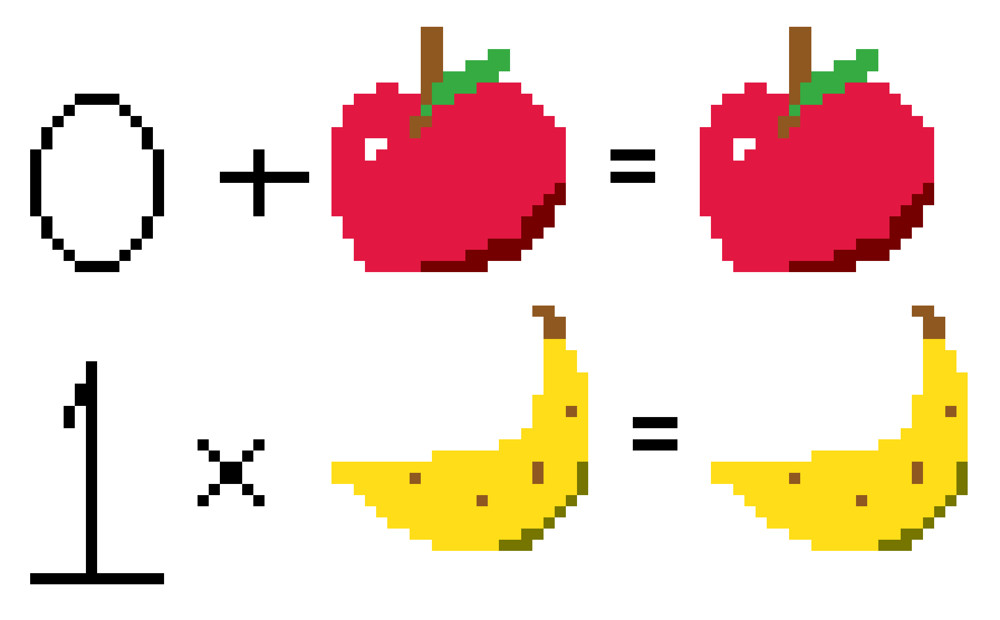
The additive identity in the real numbers is 0. Adding 0 to any number leaves the number unchanged. The multiplicative identity in the real numbers is 1. Multiplying any number by 1 leaves the number unchanged.
| 1. | Find a quantity which is being multiplied by zero. | \(\underbrace{1\times 0}_{\text{here!}} + 2\) |
| 2. | Replace that entire product with zero. | \(0 + 2\) |
| 3. | The result is equivalent to what you started with. | \(1\times 0 + 2 = 0+2\) |
- \( x \times 0 = 0 \)
- \( 0 \times (x + y) = 0 \)
- \( 0 \div x = 0 \) as long as \(x \neq 0\)
- \( 0 \times 0 = 0 \)
|
|
|---|---|
| \( x \times 0 = x \) | \( x \times 0 = 0 \) |
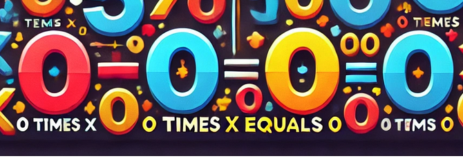
The zero multiplication property states that zero times any real number is just zero. In symbols, \(0a = 0\) for all real numbers \(a\).
| 1. | Start with an expression. | \(2 \times 3 + 14\) |
| 2. | Group the part of the expression you want to substitute in parentheses, without changing the value of the expression. | \(2 \times 3 + (14) \) |
| 3. | Replace the contents of the parentheses with something equivalent. | \(2 \times 3 + (2 \times 7)\) |
| 4. | The result is equivalent to what you started with. | \(2 \times 3 + 14 = 2 \times 3 + 2 \times 7\) |
|
|
|---|---|
Substituting without grouping:
|
Use parentheses to group before substituting:
|
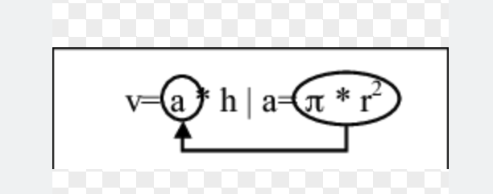
The substitution property essentially states that you can replace quantities with equivalent quantities and except the same result. The formal mathematical statement is that "functions are well-defined." This means, for instance, if you plug in equivalent quantities to a sum, you should get out equivalent quantities.
| 1. | Start with an equation. | \(4x + 3 = 5\) |
| 2. | Choose a quantity to add to each side. | \(1\) |
| 3. | Add the quantity to both sides of the equation. | \((4x + 3) + 1 = (5) + 1\) |
| 4. | The resulting equation has the same solution(s) as the original equation. | \(4x+4=6\) |
- \(2x-1=3 \longrightarrow (2x-1)+1=(3)+1 \longrightarrow 2x = 4\)
|
|
|---|---|
Adding to every term:
|
Use parentheses to group each side and add once:
|


The addition property states that adding the same quantity to both sides of an equation results in an equivalent equation. Recall that an equivalent equation is one which has the same solution(s) as the original. In symbols you can write this as \(a = b \implies a+c = b+c\) for all real numers \(a\), \(b\), and \(c\).
| 1. | Start with an equation. | \(4x + 3 = 5\) |
| 2. | Choose a quantity to subtract from each side. | \(1\) |
| 3. | Subtract the quantity from both sides of the equation. | \((4x + 3) - 1 = (5) - 1\) |
| 4. | The resulting equation has the same solution(s) as the original equation. | \(4x+2=4\) |
- \(2x-1=3 \longrightarrow (2x-1)-1=(3)-1 \longrightarrow 2x-2 = 2\)
|
|
|---|---|
Subtracting from every term:
|
Use parentheses to group each side and only subtract once:
|
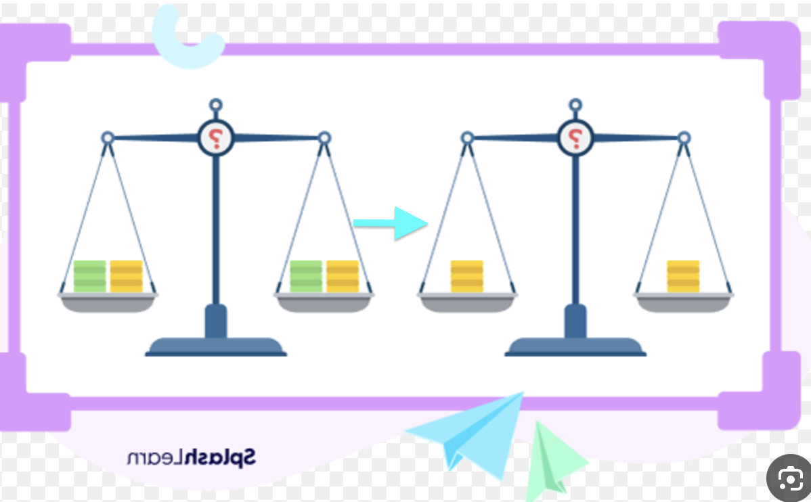
The subtraction property states that subtracting the same quantity from both sides of an equation results in an equivalent equation. Recall that an equivalent equation is one which has the same solution(s) as the original. In symbols you can write this as \(a = b \implies a-c = b-c\) for all real numers \(a\), \(b\), and \(c\).
| 1. | Start with an equation. | \(4x + 3 = 5\) |
| 2. | Choose a non-zero quantity to multiply each side by. | \(2\) |
| 3. | Multiply each side of the equation by that quantity. | \(2(4x + 3)= 2(5)\) |
| 4. | The resulting equation has the same solution(s) as the original equation. | \(8x+6=10\) |
- \(2x-1=3 \longrightarrow 4 \cdot (2x-1)=4 \cdot (3) \longrightarrow 8x-4 = 12\)
|
|
|---|---|
Only multiplying part of each side:
|
Use parentheses to group each side and only multiply once:
|
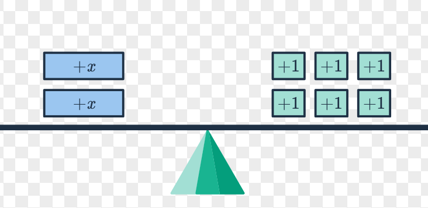
The multiplication property states that multiplying both sides of an equation by the same nonzero quantity results in an equivalent equation. Recall that an equivalent equation is one which has the same solution(s) as the original. In symbols you can write this as \(a = b \implies ac = bc\) for all real numers \(a\), \(b\), and \(c\), where \(c \neq 0\).
| 1. | Start with an equation. | \(8x + 6 = 10\) |
| 2. | Choose a non-zero quantity to divide each side by. | \(2\) |
| 3. | Divide each side of the equation by that quantity. | \((8x + 6)\div 2= (10)\div 2\) |
| 4. | The resulting equation has the same solution(s) as the original equation. | \(4x+3=5\) |
- \(8x-4=12 \longrightarrow \frac{8x-4}{4}=\frac{12}{4} \longrightarrow 2x-1=3\)
|
|
|---|---|
Only dividing part of each side:
|
Use parentheses to group each side and only divide once:
|
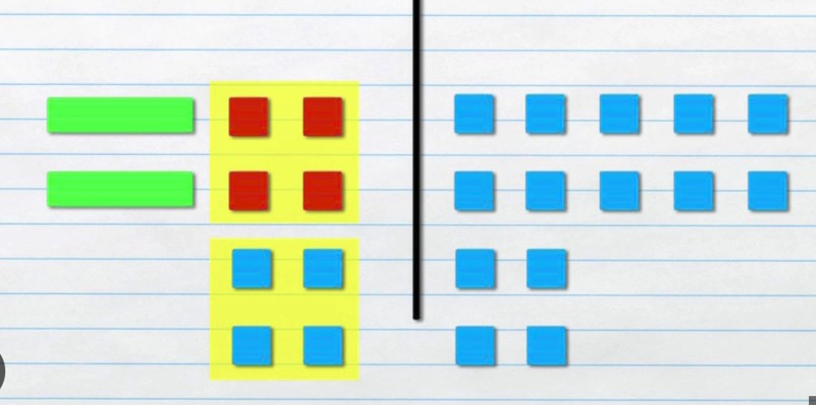
The division property states that dividing both sides of an equation by the same nonzero quantity results in an equivalent equation. Recall that an equivalent equation is one which has the same solution(s) as the original. In symbols you can write this as \(a = b \implies a \div c = b \div c\) for all real numers \(a\), \(b\), and \(c\), where \(c \neq 0\).
| 1. | Start with an equation. | \(4x + 3 = 5\) |
| 2. | Find another equation that has one side the same as one side of the equation you started with. | \(5 = 7-x\) |
| 3. | Chain the two equations together with the common expression in the middle. | \(4x+3=5=7-x\) |
| 4. | The first and last expression in the chain are equal. | \(4x + 3 = 7-x\) |
- If you know \(y = 3x-2\) and also \(y=1+x\), then you also know \(3x-2=1+x\).
|
|
|---|
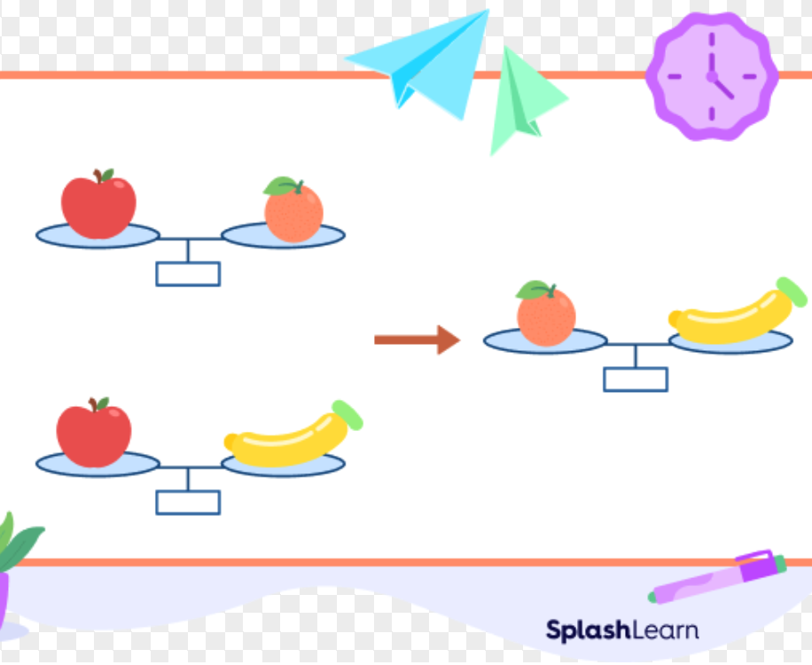
The transitive property states that, if \(a=b\) and \(b=c\), then \(a=c\) for all real numbers \(a,b,c\).
| 1. | Start with an equation. | \(4x + 3 = 5\) |
| 2. | Reverse the order of the two sides to get an equation with the same solution(s) as the original. | \(5 = 4x+3\) |
|
|
|---|

The symmetric property states that, if \(a=b\), then \(b=a\) for all real numbers \(a,b\).
| 1. | Start with an expression. | \(4x + 3\) |
| 2. | Put it on both sides of an equation. | \(4x + 3 = 4x+3\) |
| 3. | This is a true statement, but it did not make an equation equivalent to another equation, so do we even want it here? | \(i_d^k\) |
- \(2x-1=3 \longrightarrow (2x-1)+1=(3)+1 \longrightarrow 2x = 4\)
|
|
|---|
The reflexive property states that \(a=a\) for all real numbers \(a\).
| 1. | Start with an algebraic expression, such as one side of an equation. | \(\underbrace{a - b + 3 - 2a + 4b}_{\text{here!}} = \cdots\) |
| 2. | Rearrange the sum so that like terms are adjacent. | \(\underbrace{a-2a}_{\text{terms with } a}-\underbrace{b+4b}_{\text{terms with } b}+\underbrace{3}_{\text{constant terms}} = \cdots\) |
| 3. | Combine the like terms. Now, the variables have been consolidated. | \(-a+3b+3 = \cdots\) |
- \(4x-2+3x = \cdots \longrightarrow \underbrace{4x+3x}_{\text{like terms}}-2 = \cdots \longrightarrow 7x-2 = \cdots\)
|
|
|---|---|
Changing the exponents:
|
Leave the exponent alone, and account for how many like terms there are:
|

The phrase gather like terms emcompasses may of the other tools on this page, including associativity, commutativity, and factoring. At the core of this process is doing things like rewriting \(x^2 + 3x^2\) as \(4x^2\), and also leaving things like \(x^2 - y\) alone. What's going on "under the hood" is that like terms must have a variable portion that is always equal, no matter what the values of the variables are. That's why like terms must have the same variables (\(x\) and \(y\) don't always have to be equal to each other) raised to the same powers (\(x\) and \(x^2\) don't have to be equal to each other).
| 1. | Start with an equation. | \(3(x-2) = 4x + 1\) |
| 2. | Expand things out so that the variable isn't grouped with other things in parentheses or fractions. | \(3x - 6 = 4x + 1\) |
| 3. | Use the addition and subtraction properties to move all the terms with the variable to one side of the equation, and everything else to the other side. | \(3x - 4x = 1 + 6\) |
| 4. | Gather like terms. | \(-x = 7\) |
| 5. | Use the multiplication or division properties to make the variable have a coefficient of \(1\). | \(x = -7\) |
- Start with the equation: \( 3x + 5 = 17 \)
- Subtract 5 from both sides: \( 3x + 5 - 5 = 17 - 5 \) which simplifies to \( 3x = 12 \)
- Divide both sides by 3: \( \frac{3x}{3} = \frac{12}{3} \) which simplifies to \( x = 4 \)
- Verify the solution by substituting \( x = 4 \) into the original equation: \( 3(4) + 5 = 17 \)
- Since both sides are equal, \( x = 4 \) is the correct solution.
|
|
|---|
The phrase isolate the variable is synonymous with the process of algebraically solving an equation to express one variable in terms of all the stuff in the equation that doesn't involve the variable you're solving for.
| 1. | Start with an equation. | \(3(x-2) = 4x + 1\) |
| 2. | Expand things out so that the variable isn't grouped with other things in parentheses or fractions. | \(3x - 6 = 4x + 1\) |
| 3. | Use the addition and subtraction properties to move all the terms with the variable to one side of the equation, and everything else to the other side. | \(3x - 4x = 1 + 6\) |
| 4. | Gather like terms. | \(-x = 7\) |
| 5. | Use the multiplication or division properties to make the variable have a coefficient of \(1\). | \(x = -7\) |
- Start with the equation: \( 3x + 5 = 17 \)
- Subtract 5 from both sides: \( 3x + 5 - 5 = 17 - 5 \) which simplifies to \( 3x = 12 \)
- Divide both sides by 3: \( \frac{3x}{3} = \frac{12}{3} \) which simplifies to \( x = 4 \)
- Verify the solution by substituting \( x = 4 \) into the original equation: \( 3(4) + 5 = 17 \)
- Since both sides are equal, \( x = 4 \) is the correct solution.
|
|
|---|
The phrase isolate the variable is synonymous with the process of algebraically solving an equation to express one variable in terms of all the stuff in the equation that doesn't involve the variable you're solving for.
| 1. | Start with a system of equations. | \(\left \{ \begin{aligned} x+y & = 10 \\ x-y & = 2 \end{aligned} \right .\) |
| 2. | Isolate the variable in one of the equations. | \(\left \{ \begin{aligned} x+y & = 10 \\ x & = 2 + y \end{aligned} \right .\) |
| 3. | Substitute the expression for the isolated variable into the other equation. | \((2+y) + y = 10\) |
| 4. | Isolate the variable in this new equation. | \(2 + 2y = 10 \rightarrow 2y=8 \rightarrow y=4\) |
| 5. | Use the previous isolated variable to solve for it, too, and that's it. | \(x = 2+y = 6\) |
- Given the system: \[ \begin{align*} x + y &= 7 \\ x &= 3 \end{align*} \] Step 1: Substitute \( x = 3 \) into the first equation: \[ 3 + y = 7 \] Step 2: Solve for \( y \): \[ y = 4 \] Solution: \( x = 3 \), \( y = 4 \).
- Given the system: \[ \begin{align*} 2x + y &= 8 \\ y &= x + 1 \end{align*} \] Step 1: Substitute \( y = x + 1 \) into the first equation: \[ 2x + (x + 1) = 8 \] Step 2: Solve for \( x \): \[ 3x + 1 = 8 \quad \Rightarrow \quad 3x = 7 \quad \Rightarrow \quad x = \frac{7}{3} \] Step 3: Substitute \( x = \frac{7}{3} \) into \( y = x + 1 \): \[ y = \frac{7}{3} + 1 = \frac{10}{3} \] Solution: \( x = \frac{7}{3} \), \( y = \frac{10}{3} \).
- Given the system: \[ \begin{align*} 3x - 2y &= 4 \\ x &= y + 2 \end{align*} \] Step 1: Substitute \( x = y + 2 \) into the first equation: \[ 3(y + 2) - 2y = 4 \] Step 2: Simplify and solve for \( y \): \[ 3y + 6 - 2y = 4 \quad \Rightarrow \quad y + 6 = 4 \quad \Rightarrow \quad y = -2 \] Step 3: Substitute \( y = -2 \) into \( x = y + 2 \): \[ x = -2 + 2 = 0 \] Solution: \( x = 0 \), \( y = -2 \).
|
|
|---|---|
|
Substituting incorrectly: Given: \[ \begin{align*} x + y &= 5 \\ x &= y - 2 \end{align*} \] Substituting into the first equation as: \[ y - 2 + y = 5 \] instead of: \[ x = y - 2 \] |
Correct substitution: Substitute \( x = y - 2 \) into \( x + y = 5 \): \[ (y - 2) + y = 5 \] Simplify: \[ 2y - 2 = 5 \quad \Rightarrow \quad 2y = 7 \quad \Rightarrow \quad y = \frac{7}{2} \] |
|
Misinterpreting the substitution: Given: \[ \begin{align*} 3x + y &= 7 \\ y &= x + 2 \end{align*} \] Incorrectly substituting as: \[ 3x + x + 2 = 7 \] instead of correctly substituting \( y \). |
Correct substitution: Substitute \( y = x + 2 \) into \( 3x + y = 7 \): \[ 3x + (x + 2) = 7 \] Simplify: \[ 4x + 2 = 7 \quad \Rightarrow \quad 4x = 5 \quad \Rightarrow \quad x = \frac{5}{4} \] |
|
Forgetting to substitute back: After solving for one variable, forgetting to substitute it back into the second equation to find the other variable. |
After solving for \( x \) or \( y \), remember to substitute the value back into the other equation to find the remaining variable.
Example: If \( x = 3 \), substitute it back into \( y = x + 1 \) to find \( y = 4 \). |
|
Incorrect arithmetic after substitution: After substituting, an error in basic arithmetic leads to incorrect results. |
Double-check all arithmetic steps after substitution. For example: \[ 2x + 3 = 5 \quad \Rightarrow \quad 2x = 2 \quad \Rightarrow \quad x = 1 \] Carefully simplify to avoid errors. |
N/A
As a strategy for solving systems of equations, substitution is a combination of isolating variables and using substitution for creating equivalent expressions. That's all!
| 1. | Start with a system of equations. | \(\left \{ \begin{aligned} x+y & = 10 \\ 2x+y & = 12 \end{aligned} \right .\) |
| 2. | Pick one of the variables to eliminate, and create equivalent equations so that the variable is on the same side of each equation, but has opposite coefficients. | \(\left \{ \begin{aligned} -x-y & = -10 \\ 2x + y & = 12 \end{aligned} \right .\) |
| 3. | Add the lefthand sides of the equations, and also add the righthand sides. This is still valid because you added equivalent quantities to both sides. | \((-x-y)+(2x+y) = -10 + 12\) |
| 4. | Isolate the other variable (not the one you eliminated) in this new equation. | \(-x+2x-y+y=-10+12 \rightarrow x = 2\) |
| 5. | Solve for the variable you eliminated with one of the equations you started with. | \(x+y = 10 \rightarrow 2+y=10 \rightarrow y=8\) |
- Given the system: \[ \begin{align*} x + y &= 10 \\ x - y &= 2 \end{align*} \] Step 1: Add the two equations to eliminate \( y \): \[ (x + y) + (x - y) = 10 + 2 \quad \Rightarrow \quad 2x = 12 \] Step 2: Solve for \( x \): \[ x = 6 \] Step 3: Substitute \( x = 6 \) into the first equation: \[ 6 + y = 10 \quad \Rightarrow \quad y = 4 \] Solution: \( x = 6 \), \( y = 4 \).
- Given the system: \[ \begin{align*} 3x + 2y &= 18 \\ 2x - 2y &= 4 \end{align*} \] Step 1: Add the two equations to eliminate \( y \): \[ (3x + 2y) + (2x - 2y) = 18 + 4 \quad \Rightarrow \quad 5x = 22 \] Step 2: Solve for \( x \): \[ x = \frac{22}{5} \] Step 3: Substitute \( x = \frac{22}{5} \) into one of the original equations to solve for \( y \): \[ 3\left(\frac{22}{5}\right) + 2y = 18 \] Simplify: \[ \frac{66}{5} + 2y = 18 \quad \Rightarrow \quad 2y = 18 - \frac{66}{5} = \frac{24}{5} \] \[ y = \frac{12}{5} \] Solution: \( x = \frac{22}{5} \), \( y = \frac{12}{5} \).
- Given the system: \[ \begin{align*} 2x + 3y &= 12 \\ 4x + 6y &= 24 \end{align*} \] Step 1: Notice that the second equation is a multiple of the first. Subtract the first equation from the second: \[ (4x + 6y) - (2x + 3y) = 24 - 12 \quad \Rightarrow \quad 0 = 0 \] Result: This indicates the system has infinitely many solutions, as the two equations are dependent (i.e., they represent the same line).
- Given the system: \[ \begin{align*} 5x - 2y &= 1 \\ 3x + 2y &= 11 \end{align*} \] Step 1: Add the two equations to eliminate \( y \): \[ (5x - 2y) + (3x + 2y) = 1 + 11 \quad \Rightarrow \quad 8x = 12 \] Step 2: Solve for \( x \): \[ x = \frac{12}{8} = \frac{3}{2} \] Step 3: Substitute \( x = \frac{3}{2} \) into one of the original equations to solve for \( y \): \[ 5\left(\frac{3}{2}\right) - 2y = 1 \quad \Rightarrow \quad \frac{15}{2} - 2y = 1 \] Simplify and solve for \( y \): \[ -2y = 1 - \frac{15}{2} = -\frac{13}{2} \quad \Rightarrow \quad y = \frac{13}{4} \] Solution: \( x = \frac{3}{2} \), \( y = \frac{13}{4} \).
|
|
|---|---|
|
Failing to align terms properly: When adding or subtracting the equations, students might not align like terms (i.e., \( x \)-terms, \( y \)-terms, and constants) correctly. For example: \[ \begin{align*} 2x + 3y &= 12 \\ 4x + 2 &= 10 \end{align*} \] Incorrectly aligning the terms as: \[ (2x + 3y) + (4x + 2) = 22 \] |
Always ensure that like terms are aligned before adding or subtracting. In this case, modify the second equation so that all terms are comparable: \[ \begin{align*} 2x + 3y &= 12 \\ 4x + 0y &= 10 \end{align*} \] Now, align the \( x \)- and \( y \)-terms correctly before proceeding with elimination. |
|
Forgetting to multiply both sides when necessary: To eliminate a variable, students might multiply one side of the equation by a factor but forget to apply the multiplication to the entire equation. For example: \[ \begin{align*} 2x + 3y &= 6 \\ 4x - y &= 5 \end{align*} \] Attempting to eliminate \( x \) by multiplying the first equation by 2 but forgetting to multiply the constant term: \[ 4x + 6y = 6 \] |
Remember to multiply both sides of the equat |
N/A
|
|
|---|
| 1. | Start with an inequality. | \(4x + 3 < 5\) |
| 2. | Choose a quantity to add to each side. | \(1\) |
| 3. | Add the quantity to both sides of the inequality. | \((4x + 3) + 1 < (5) + 1\) |
| 4. | The resulting inequality has the same solution(s) as the original inequality. | \(4x+4<6\) |
- \(2x-1=3 \longrightarrow (2x-1)+1=(3)+1 \longrightarrow 2x = 4\)
|
|
|---|
The addition property states that adding the same quantity to both sides of an equation results in an equivalent equation. Recall that an equivalent equation is one which has the same solution(s) as the original. In symbols you can write this as \(a = b \implies a+c = b+c\) for all real numers \(a\), \(b\), and \(c\).
| 1. | Start with an equation. | \(4x + 3 = 5\) |
| 2. | Choose a quantity to add to each side. | \(1\) |
| 3. | Add the quantity to both sides of the equation. | \((4x + 3) + 1 = (5) + 1\) |
| 4. | The resulting equation has the same solution(s) as the original equation. | \(4x+4=6\) |
- \(2x-1=3 \longrightarrow (2x-1)+1=(3)+1 \longrightarrow 2x = 4\)
|
|
|---|
The addition property states that adding the same quantity to both sides of an equation results in an equivalent equation. Recall that an equivalent equation is one which has the same solution(s) as the original. In symbols you can write this as \(a = b \implies a+c = b+c\) for all real numers \(a\), \(b\), and \(c\).
| 1. | Start with an equation. | \(4x + 3 = 5\) |
| 2. | Choose a quantity to add to each side. | \(1\) |
| 3. | Add the quantity to both sides of the equation. | \((4x + 3) + 1 = (5) + 1\) |
| 4. | The resulting equation has the same solution(s) as the original equation. | \(4x+4=6\) |
- \(2x-1=3 \longrightarrow (2x-1)+1=(3)+1 \longrightarrow 2x = 4\)
|
|
|---|
The addition property states that adding the same quantity to both sides of an equation results in an equivalent equation. Recall that an equivalent equation is one which has the same solution(s) as the original. In symbols you can write this as \(a = b \implies a+c = b+c\) for all real numers \(a\), \(b\), and \(c\).
| 1. | Start with an equation. | \(4x + 3 = 5\) |
| 2. | Choose a quantity to add to each side. | \(1\) |
| 3. | Add the quantity to both sides of the equation. | \((4x + 3) + 1 = (5) + 1\) |
| 4. | The resulting equation has the same solution(s) as the original equation. | \(4x+4=6\) |
- \(2x-1=3 \longrightarrow (2x-1)+1=(3)+1 \longrightarrow 2x = 4\)
|
|
|---|
The addition property states that adding the same quantity to both sides of an equation results in an equivalent equation. Recall that an equivalent equation is one which has the same solution(s) as the original. In symbols you can write this as \(a = b \implies a+c = b+c\) for all real numers \(a\), \(b\), and \(c\).
| 1. | Start with an equation. | \(4x + 3 = 5\) |
| 2. | Choose a quantity to add to each side. | \(1\) |
| 3. | Add the quantity to both sides of the equation. | \((4x + 3) + 1 = (5) + 1\) |
| 4. | The resulting equation has the same solution(s) as the original equation. | \(4x+4=6\) |
- \(2x-1=3 \longrightarrow (2x-1)+1=(3)+1 \longrightarrow 2x = 4\)
|
|
|---|
The addition property states that adding the same quantity to both sides of an equation results in an equivalent equation. Recall that an equivalent equation is one which has the same solution(s) as the original. In symbols you can write this as \(a = b \implies a+c = b+c\) for all real numers \(a\), \(b\), and \(c\).
Images generated with this Desmos graph.
| 1. | Start with a graph. Make sure the axes are clearly labeled with descriptions and units. If the axes aren't labeled, ask whoever made the graph what the axes represent. | 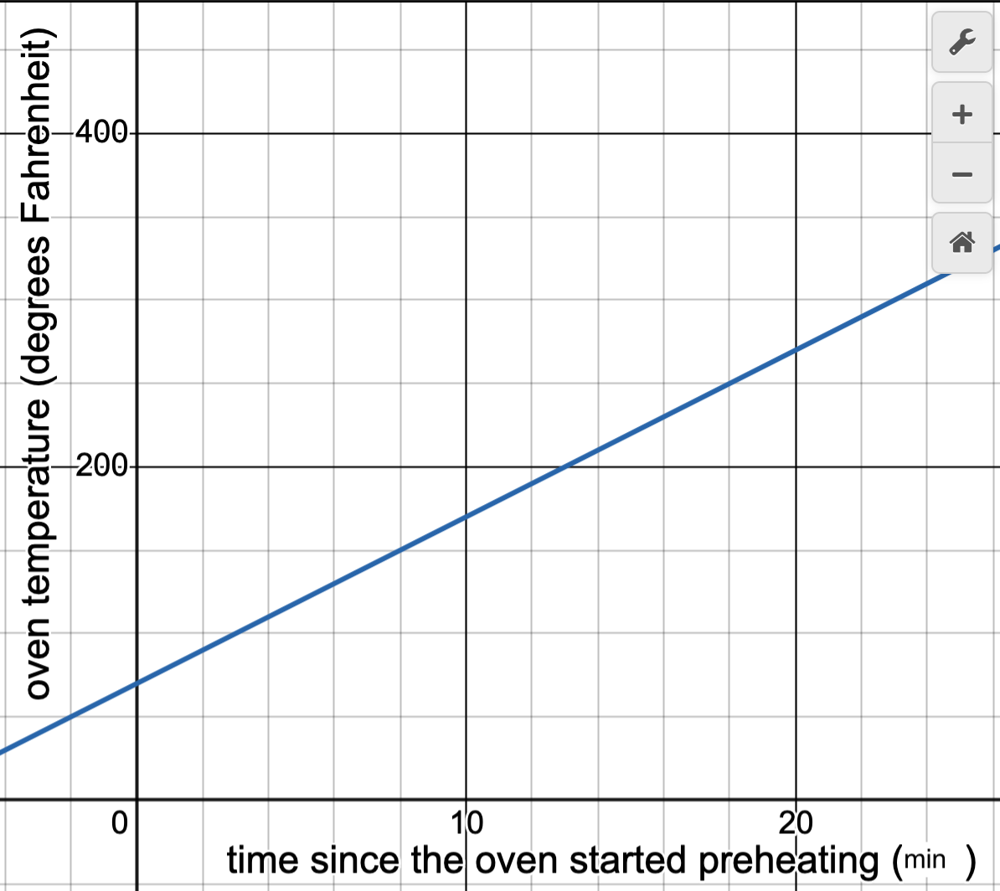 |
| 2. | Pick a point on the actual thing that is graphed. |  |
| 3. | Find the \(x\)- and \(y\)-coordinates of the point by checking how far along the \(x\)- and \(y\)-axes the point is. | 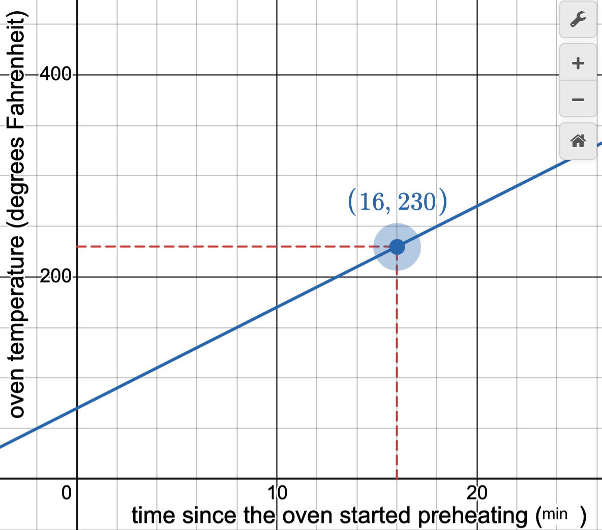 |
| 4. | This point represents a pair of quantities that are related by the scenario the graph represents. | Sixteen minutes after starting to preheat, the oven was at 230 degrees Fahrenheit. |
| 5. | Points that aren't on the graphed object are not related by the scenario. | Seventeen minutes after starting to preheat, the oven was not at 140 degrees Fahrenheit.
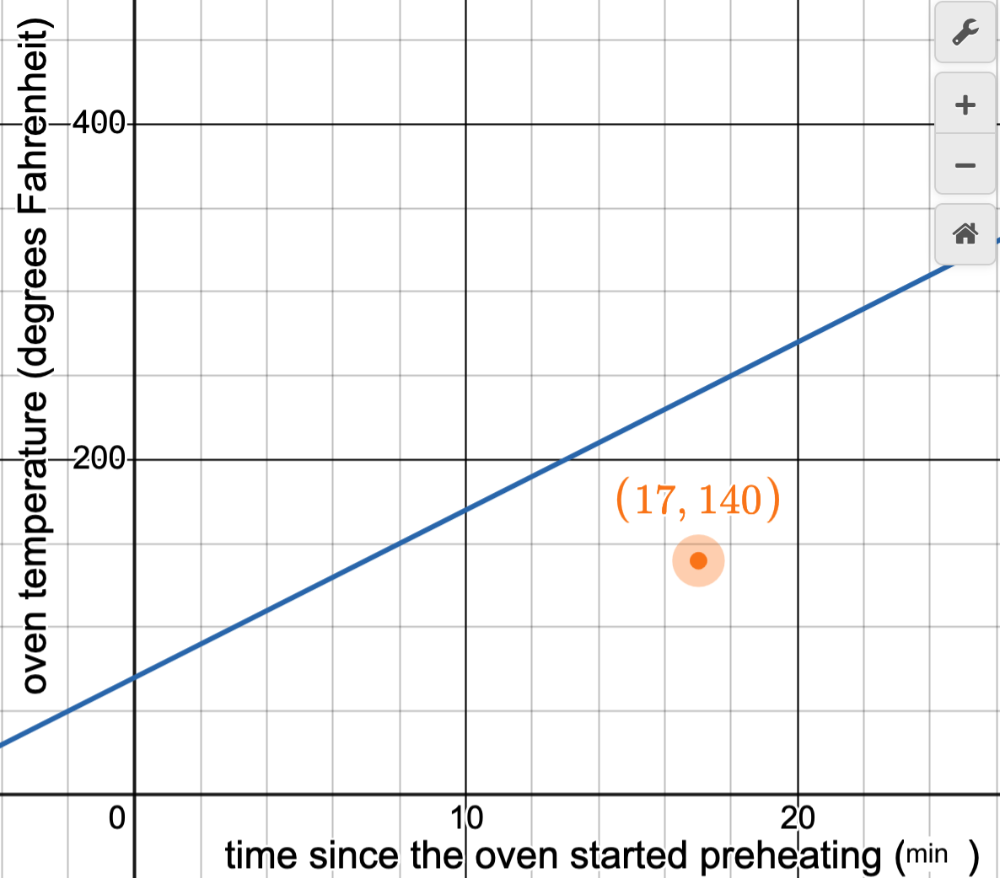 |
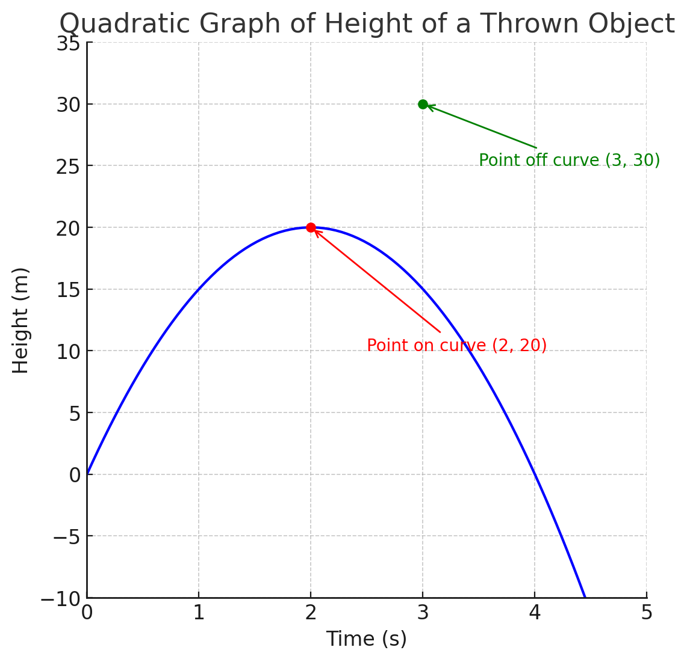
|
|
|---|---|
| Misinterpreting axis labels (e.g., treating "years" as "months"). | Carefully read both axis labels to understand the units and scale before analyzing the data. |
| Overlooking data points that fall on the axes (assuming they are zero). | Check all points, especially those on axes, to confirm their values rather than assuming a value. |
| Ignoring the scale intervals and reading values incorrectly. | Count intervals along each axis to determine the scale and apply this to read values accurately. |
| Confusing different data series in a multi-line or multi-bar graph. | Refer to the legend and use colors or markers to identify the correct data series for each line or bar. |
| Assuming a trend or pattern without analyzing data distribution. | Look for data clusters, outliers, and consider the entire range of data before concluding trends or patterns. |
| Assuming every data point has the same weight or significance. | Consider the context of each point. Some graphs may have significant points (e.g., peaks or troughs) that require more attention. |
Check out the "How To" and "Examples" sections!
Graphs on the coordinate plane display precisely when a certain relationship between the \(x\)- and \(y\)-coordinates is satisfied.
| 1. | Start with a table of data representing a linear relationship. If you don't have one yet, check out "Make a table!" | 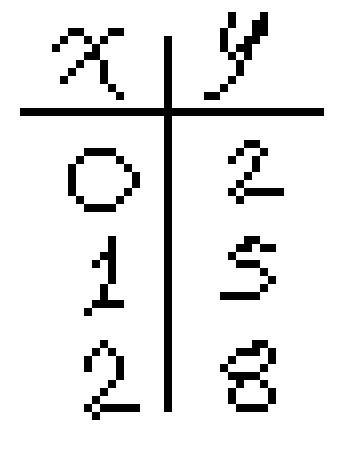 |
| 4. | Plot at least two different points from the table on the coordinate plane. |  |
| 4. | Connect the dots! That's it. | 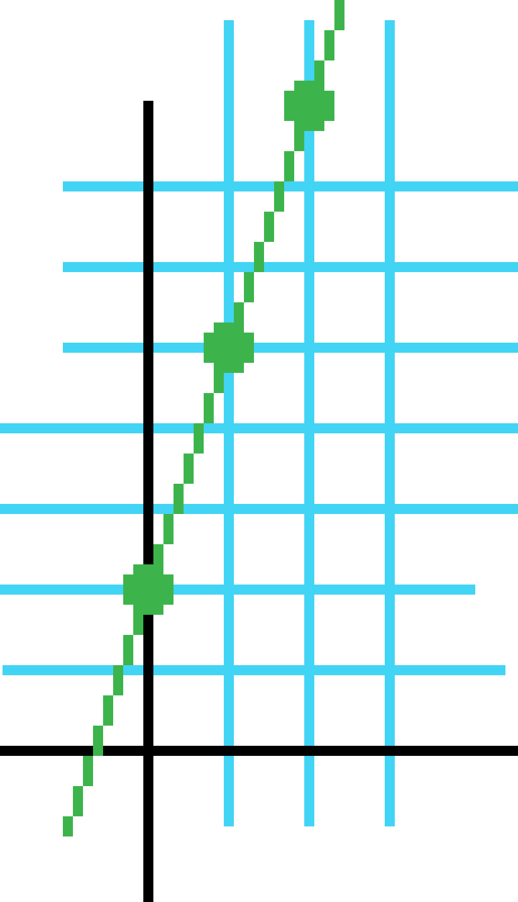 |
Examples from this Desmos graph.
- 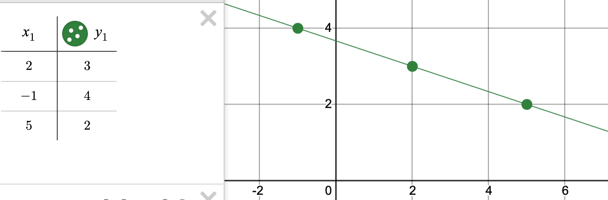
- 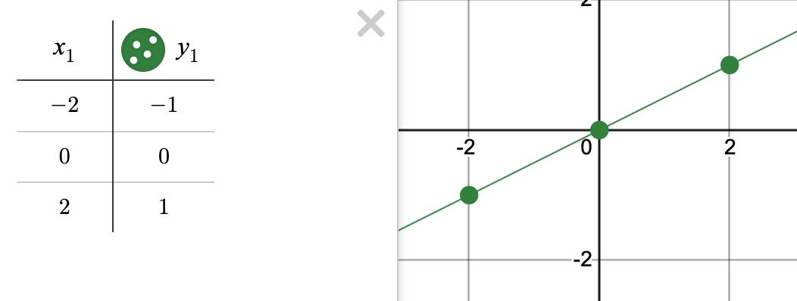
- 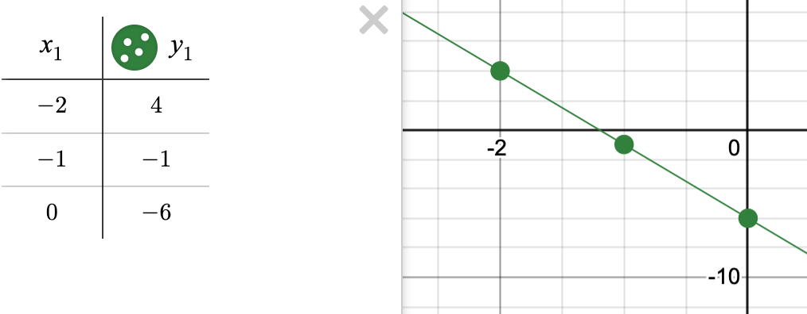
|
|
|---|---|
| Plotting points incorrectly: Transposing x- and y-values or placing points at wrong coordinates. | Check coordinates carefully: Double-check each (x, y) pair before plotting on the graph to ensure correct placement. |
| Not labeling the axes: Forgetting to label or incorrectly labeling x- and y-axes. | Label both axes: Clearly label the x- and y-axes with appropriate variables or units as given in the table. |
| Using an inconsistent scale: Choosing different scales for x- and y-axes without clear indication, causing a distorted graph. | Maintain a consistent scale: Ensure the scale is consistent along each axis, and indicate scale differences if necessary. |
| Forgetting to draw the line: Plotting points but neglecting to connect them with a line. | Draw a straight line: After plotting points, draw a line through them to represent the linear relationship. |
| Ignoring the pattern: Not verifying if the points align in a linear (straight-line) pattern. | Check for linearity: Ensure that plotted points follow a straight line; if they don't, re-check the table for errors or re-plot as needed. |
Check out the "Examples" section!
Linear relationships are exactly those bivariate relationships whose graphs are straight lines.
| 1. | Start with a table representing a linear relationship. If you don't have one, check out the "Make a table" tool! | |
| 2. | Find the slope. | \(\frac{5-2}{1-0} = \frac{3}{1} = 3\) |
| 3. | A linear equation with defined slope can always be expressed as \(y=mx+b\), where \(m\) is the slope. | \(y = 3x + b\) |
| 4. | Plug in a point of your choosing, and solve for \(b\). | \(5 = 3(1) + b \rightarrow 5 = 3+b \rightarrow b = 5-3 = 2\) |
| 5. | The value \(b\) is the \(y\)-intercept, and how you have the slope-intercept form of the equation! | \(y = 3x + 2\) |
| Table of Points | Linear Equation | ||||||||
|---|---|---|---|---|---|---|---|---|---|
|
y = 2x + 1 | ||||||||
|
y = 2x + 4 | ||||||||
|
y = 3x + 1 | ||||||||
|
y = 2x + 2 | ||||||||
|
y = 2x - 4 |
|
|
|---|---|
| Misinterpreting the slope: Calculating the slope incorrectly by reversing the change in x and change in y (e.g., dividing rise by run incorrectly). | Use the correct slope formula: Ensure the slope is calculated as \( \frac{y_2 - y_1}{x_2 - x_1} \), where "rise" is the change in y-values, and "run" is the change in x-values. |
| Forgetting to use a point for the y-intercept: Omitting the b value in the equation \( y = mx + b \) or assuming it is zero without verifying. | Calculate the y-intercept: Plug a point from the table into \( y = mx + b \) after finding the slope to solve for b. |
| Using inconsistent points: Choosing two points that don't follow the linear relationship due to misalignment or error. | Verify points carefully: Confirm that all points fit a linear pattern before choosing two to calculate the slope and y-intercept. |
| Switching x and y values: Misplacing x and y values in the equation, leading to an incorrect relationship. | Double-check variable placement: Ensure that x-values represent the input (independent) variable and y-values represent the output (dependent) variable in \( y = mx + b \). |
| Incorrect simplification: Failing to simplify the slope, making the equation appear more complex. | Simplify the slope: Reduce the slope to its simplest form (if possible) for a cleaner, clearer equation. |
N/A
Slope-intercept form is just one of many ways to write a linear equation. Determining the slope and the \(y\)-intercept from a table of linearly related data can be done as described in the "How To" section. The key fact is that each row of the table contains a pair of \(x\) and \(y\) values that make the equation true.
| 1. | Start with a scenario involving a linear relationship. | Here's a scenario involving a starting value and constant change (for other kinds, see the "Examples" section): An oven starts at 70 degrees Fahrentheit and increases by 10 degrees in temperature every minute while it's preheating. | ||||||||
| 2. | Identify the two variables you want to relate. Generally, there is an "input" variable known as the independent variable and an "output" variable known as the dependent variable because it depends on the input. Include descriptions and units for both variables. | Independent variable: \(t = \text{time in minutes since the oven started preheating}\)
Dependent variable: \(d = \text{oven temperature measured in degrees Fahrenheit}\) |
||||||||
| 3. | Set up a table with the variables as headers and the independent variable on the left. |
|
||||||||
| 4. | Fill in some information you know to be true based on the scenario. |
|
-
Scenario: A car rental company charges a flat fee of $30 plus $10 per hour.
Hours (x) Cost ($y) 1 40 2 50 3 60 4 70 -
Scenario: A plumber charges an initial service fee of $50 and $25 for each additional hour of work.
Hours (x) Total Cost ($y) 1 75 2 100 3 125 4 150 -
Scenario: A hot air balloon is descending at a steady rate of 200 feet per minute.
Minutes (x) Altitude (feet y) 1 800 2 600 3 400 4 200 -
Scenario: A cell phone company offers a monthly plan with a $15 base fee plus $5 per gigabyte of data.
Data (GB, x) Monthly Cost ($y) 1 20 2 25 3 30 4 35 -
Scenario: A farmer plants trees in rows, with each row containing 5 more trees than the previous row.
Row Number (x) Number of Trees (y) 1 10 2 15 3 20 4 25
|
|
|---|---|
| Misinterpreting the rate of change: Confusing the rate of change with a flat fee or starting value, or applying the rate inconsistently across different values. | Identify the rate clearly: Make sure the rate of change is applied evenly across each step, adding or subtracting consistently for each new row in the table. |
| Ignoring the initial value: Failing to include the initial or starting value, which shifts all subsequent values incorrectly. | Always account for the starting value: Start with the initial amount and then apply the rate of change as indicated in the scenario. |
| Reversing the relationship: Mixing up independent (x) and dependent (y) values, leading to incorrect pairings. | Identify x and y variables clearly: Label columns correctly, usually placing the input or time-based variable as x and the dependent outcome as y. |
| Skipping or miscalculating increments: Incorrectly applying or skipping steps in the rate of change, resulting in values that do not reflect the scenario accurately. | Double-check calculations: Carefully add or subtract the rate for each new row to ensure consistency across the table. |
| Overlooking units or labels: Leaving out or mislabeling units, which can cause confusion when interpreting values in the table. | Include units and labels: Clearly label each column with appropriate units (e.g., hours, dollars) to avoid interpretation errors. |
N/A
Tables are one of many representations of relationships between variables. Converting between them and graphs and equations can often help reveal important details about mathematical scenarios.
| 1. | Start with a linear relationship. | This could be an equation, a table, or a graph. For this example, we'll use a table. See the "Examples" tab for other scenarios. |
| 2. | Pick two different points from the table. | \((0,2)\) and \((2,8)\) |
| 3. | Calculate the "rise," which is how much the \(y\) value increases from the first point to the next. | \(8-2=6\) |
| 4. | Calculate the "run," which is how much the \(x\) value increases from the first point to the next. | \(2-0=2\) |
| 5. | Calculate the slope as the rise divided by the run. | \(\frac{6}{2} = 3\) |
- Given the equation \(y = 4x - 5\), you can find two data points by choosing some values for \(x\) and plugging them in. Plugging in \(1\) and \(3\) for \(x\) confirms that \((1,-1)\) and \((3,7)\) are two points related by this equation. You can compute the slope as "rise over run" now. \[\frac{7 - (-1)}{3-1} = \frac{8}{2} = 4\] That's it!
- Given the graph of a linear equation, you can find two data points by choosing two points on the line.
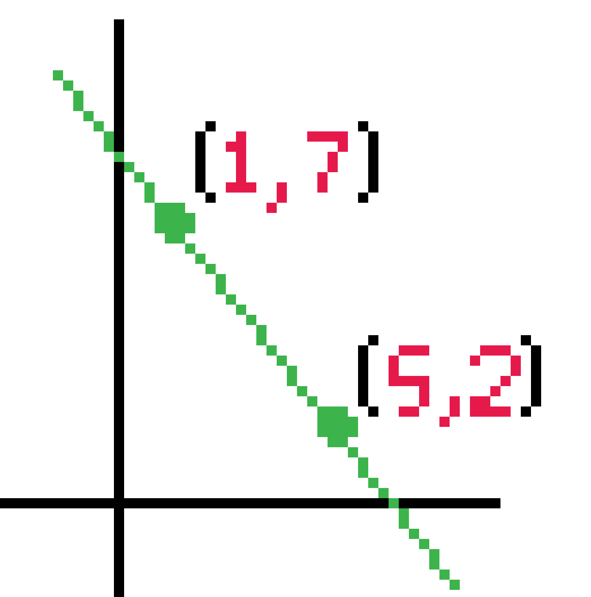
You can then compute the slope as usual now. \[\frac{2-7}{5-1} = \frac{-5}{4} = -1.25\]
|
|
|---|---|
| Vertical lines have zero slope. | The "run" in a vertical line is always zero between two points. Dividing by zero is undefined, so vertical lines actually have undefined slope. |
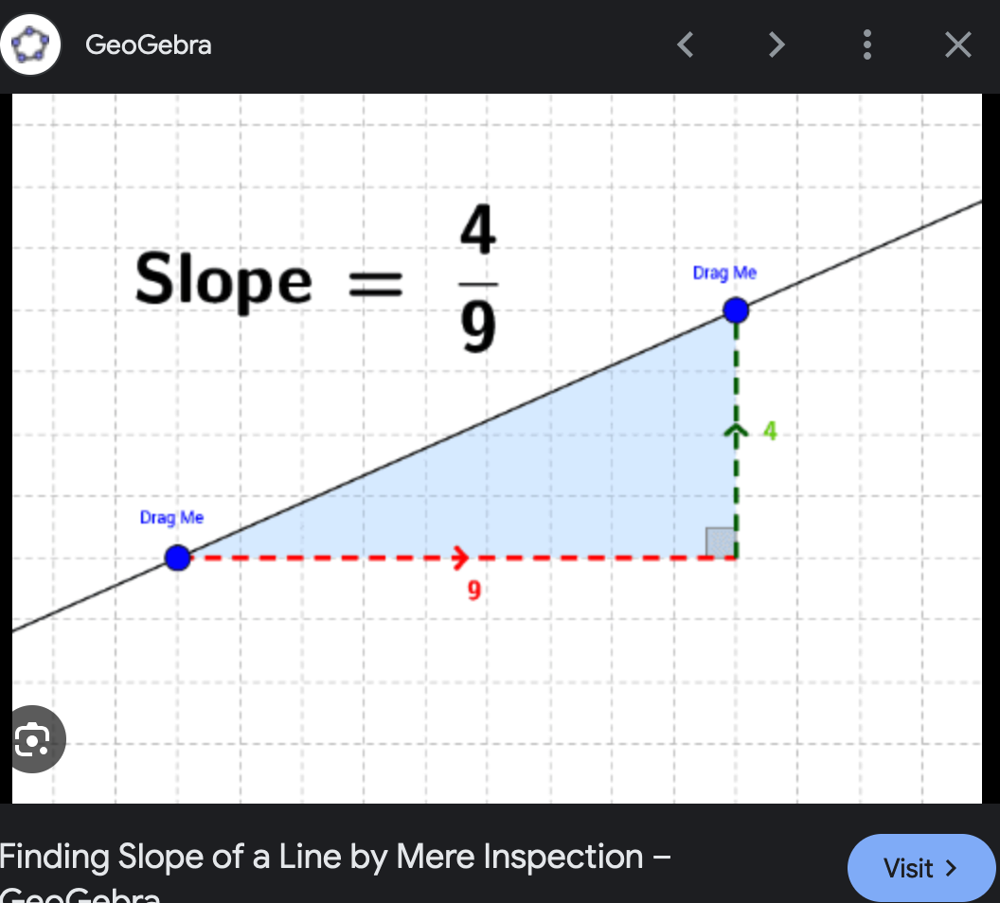
Given a pair of points \((x_1,y_1)\) and \((x_2,y_2)\) in the coordinate plane, the slope of the line between them is defined as \[ \frac{y_2-y_1}{x_2-x_1}. \]
| 1. | Start with a 2-variable linear inequality. | \(y \leq 2x-1\) |
| 2. | Graph the equation formed by replacing the inequality sign with an equals sign. If the inequality is strict (as in \(<\) or \(>\)), then make the line dotted. If the inequality is inclusive (as in \(\leq\) or \(\geq\)), then make the line solid. | Here is the graph of \(y = 2x-1\).
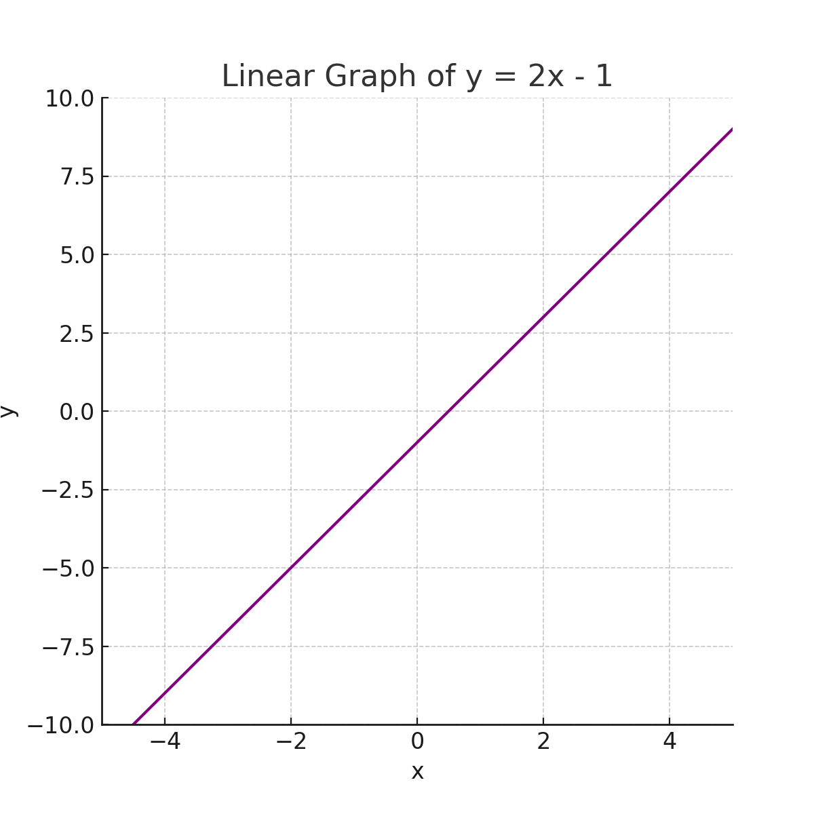 |
| 3. | Pick one point each on either side of the line. | \((0,10)\) and \((1,-4)\) |
| 4. | Check if the inequality is true for each of those points. | \((0,10) \rightarrow 10 \leq 2(0) - 1 \rightarrow\) false!
\((1,-4) \rightarrow -4 \leq 2(1)-1 \rightarrow\) true! |
| 5. | Shade the coordinate plane on the side of the line with the point that made the inequality true. | 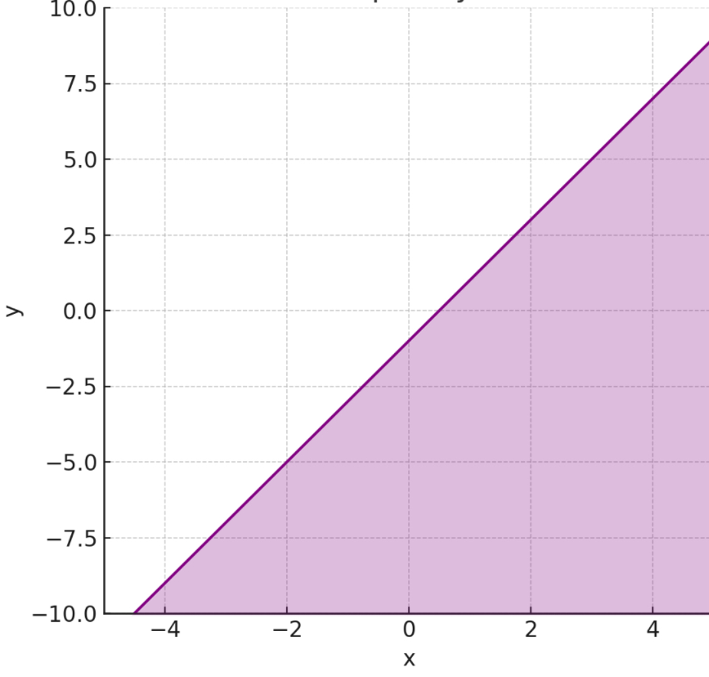 |
This example was generated using this Desmos graph.
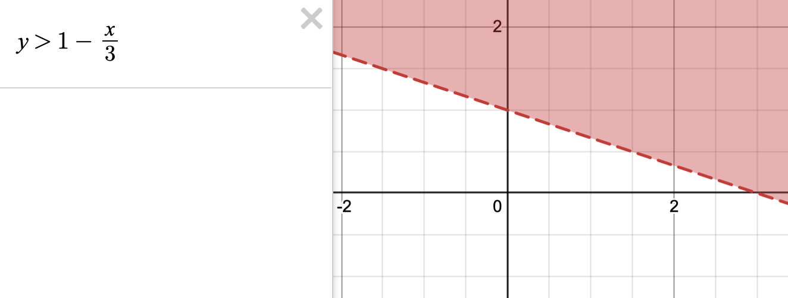
|
|
|---|---|
Using a solid line for inequalities that are < or >. |
Use a dashed line for < or > to indicate that points on the line are not included in the solution. |
Using a dashed line for inequalities that are ≤ or ≥. |
Use a solid line for ≤ or ≥ to include points on the line as part of the solution set. |
| Shading the wrong side of the line. | Test a point (like the origin if it’s not on the line) in the inequality to confirm the correct side to shade. |
| Graphing the line with the wrong slope or y-intercept. | Double-check the slope and intercept from the equation (convert to slope-intercept form if needed) before drawing the line. |
| Forgetting to flip the inequality sign when multiplying or dividing by a negative number. | Whenever you multiply or divide by a negative number, remember to reverse the inequality sign to maintain the correct direction. |
Using the equation of the line (e.g., y = mx + b) instead of the inequality. |
Rewrite the inequality if necessary and make sure the graph reflects the inequality rather than the equality. |
See the "How To" and "Examples" sections!
Graphing a 2-variable linear inequality entails shading in the entire region of the coordinate plane where the coordinates satisfy the given inequality. This process starts by graphing an equality to find the boundary between where the inequality is true or false.
Statistics
| 1. | Start with a list of numbers. | \(1,3,4,4,2\) |
| 2. | Count the numbers. | \(\underbrace{1,3,4,4,2}_{5 \text{ numbers}}\) |
| 3. | Add all the numbers together. | \(1+3+4+4+2=14\) |
| 4. | Divide the sum by the count to get the mean. That's it! | \(\frac{14}{5} = 2.8\) |
- The average of \(89,97,78,102\) is \(\frac{89+97+78+102}{4} = \frac{366}{4} = 91.5\)
|
|
|---|---|
| Average of \(1, 0, 3\) is \(\frac{1+3}{2} = 2\) | Include the zeros in the count: \(\frac{1+0+3}{3} = \frac{4}{3} \approx 1.333\) |
| Average of \(1,1,1,5\) is \(\frac{1+5}{2} = 3\) | Include repeated numbers: \(\frac{1+1+1+5}{4} = 2\) |

The mean (also known as the average) of a list of numbers is a measure of the center or position of the numbers. Somewhat informally, it represents a "typical" value from the list if you were to pick at random. More precisely, if every number in the list were replaced by the mean, the sum of the numbers would stay the same. For this reason, the mean is skewed toward outliers. For a measure of center that is not skewed by outliers, check out the median.
| 1. | Start with a list of numbers. | \(1,3,4,4,2\) |
| 2. | Order them from least to greatest. | \(1,2,3,4,4\) |
| 3. | Repeatedly cross off the smallest and largest numbers until 1 or 2 numbers remain. | \(\require{cancel} \cancel{1}, \cancel{2}, 3, \cancel{4}, \cancel{4}\) |
| 4. | If one number remains, it is the median. | \(3\) |
| 5. | If two numbers remain, their average is the median. | \(1,2,3,7 \rightarrow \cancel{1},2,3,\cancel{7} \rightarrow \frac{2+3}{2} = 2.5\) |
- \( \require{cancel} 3, 7, 9, 11, 15 \rightarrow \cancel{3}, \cancel{7}, 9, \cancel{11}, \cancel{15} \rightarrow 9\)
- \(4, 8, 10, 12 \rightarrow \cancel{4}, 8, 10, \cancel{12} \rightarrow \frac{8+10}{2} = 9 \)
- \(21, 5, 13, 17, 9 \rightarrow 5, 9, 13, 17, 21 \rightarrow \cancel{5}, \cancel{9}, 13, \cancel{17}, \cancel{21} \rightarrow 13 \)
|
|
|---|---|
|
Forgetting to sort the data set first: If you calculate the median without sorting, you may get the wrong middle value. For example, with the data set \( \{7, 3, 9\} \), selecting \( 3 \) as the median without sorting is incorrect. |
Always sort the data set in ascending order before finding the median: For the data set \( \{7, 3, 9\} \), sort to get \( \{3, 7, 9\} \). Now the median is \( 7 \). |
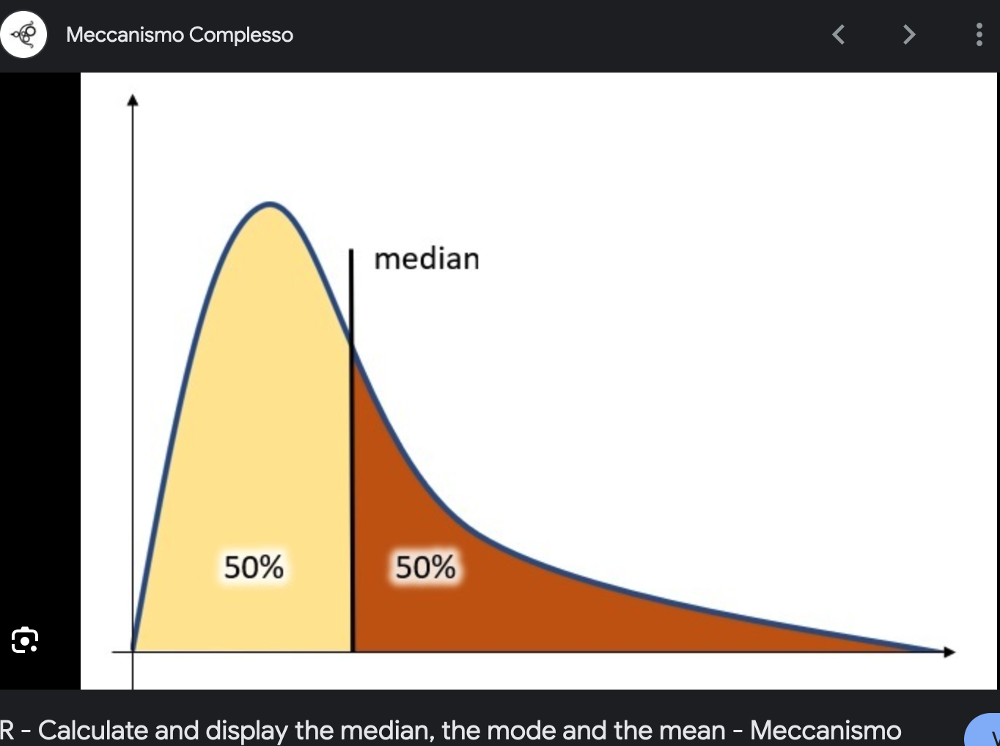
The median of a univariate data set is a measure of center which marks the halfway point of the data points: half of the data points are left of the median, and the other half are right of the median. Since calculating the median does not involve measuring how far away value are from the center of the data, the presence of outliers or asymmetry in the data don't typically influence the median.
| 1. | Start with a univariate data set. | \(2,4,5,7,9,12,14,15,17,19,21\) |
| 2. | Sort it if necessary! | This one's already sorted. |
| 3. | Find the median. If the median is in the data set, cross it out. | \(\require{cancel} 2,4,5,7,9,\cancel{12},14,15,17,19,21\) |
| 4. | Find the first quartile (Q1) by finding the median of the left half of the data. Find the third quartile (Q3) by finding the median of the right half of the data. | \(\require{cancel} 2,4,\underline{5},7,9,\cancel{12},14,15,\underline{17},19,21\) |
| 5. | Find the minimum and maximum ofi the data set. | \(2 \longleftrightarrow 21\) |
| 6. | The 5-number summary is those five numbers in order from smallest to largest. | \(2, 5, 12, 17, 21\) |
You can generate your own examples with this Desmos link. Simply change the data points that are in the list \(L\), and Desmos will show you the minimum, first quartile, median, third quartile, and maximum.
|
|
|---|---|
| Not Sorting the Data First: Attempting to find quartiles without ordering the data, which leads to incorrect results. | Sort Data in Ascending Order: Always arrange data in ascending order before calculating the minimum, quartiles, and maximum. |
| Incorrectly Identifying the Median: Miscounting or not considering whether the data set has an odd or even number of values. | Check for Even or Odd Count: If odd, the median is the middle value; if even, the median is the average of the two middle values. |
| Misinterpreting Quartile Boundaries: Dividing the data unevenly or not following standard methods to find Q1 and Q3. | Use Proper Quartile Method: Divide the data into lower and upper halves from the median, and take the median of each half for Q1 and Q3. |
| Confusing Minimum and Maximum Values: Mistaking Q1 and Q3 for the actual minimum and maximum values. | Double-Check Extremes: Ensure that the minimum and maximum are the lowest and highest values in the data set, not Q1 or Q3. |
| Leaving Out Data Points: Accidentally omitting values from the data set when calculating summary statistics. | Recheck Data Set Completeness: Review the original data to ensure all values are included in calculations. |
Check out the Boxplot tool in the "Make a data display" drawer. It's essentially a visualiztion of the 5-number summary!
The five number summary essentially breaks up a univariate data set into four intervals, where each intervals contains approximately one fourth of the total data points.
| 1. | Start with a data set. | \(2,7,45,3,4,5,8,3,2,1,7,8\) |
| 2. | Compute the first and third quartiles as in the 5-number summary. | Q1 is \(2.5\), and Q3 is \(7.5\) |
| 3. | Compute the interquartile range as \(\text{IQR} = \text{Q}3 - \text{Q}1\). | \(\text{IQR} = 7.5-2.5 = 5\) |
- Data Set: [1, 3, 3, 6, 7, 8, 9]
IQR: \( Q3 - Q1 = 8 - 3 = 5 \) - Data Set: [12, 15, 15, 18, 20, 21, 24, 26]
IQR: \( Q3 - Q1 = 24 - 15 = 9 \) - Data Set: [5, 7, 8, 10, 12, 13, 15, 18, 20]
IQR: \( Q3 - Q1 = 18 - 8 = 10 \) - Data Set: [2, 5, 7, 7, 10, 12, 14, 15]
IQR: \( Q3 - Q1 = 14 - 5 = 9 \) - Data Set: [30, 35, 40, 45, 50, 55, 60]
IQR: \( Q3 - Q1 = 55 - 35 = 20 \)
|
|
|---|---|
| Not Sorting the Data First: Trying to calculate Q1 and Q3 without ordering the data, leading to incorrect quartiles. | Sort Data in Ascending Order: Always arrange data in ascending order before finding Q1 and Q3 to calculate the IQR accurately. |
| Misidentifying Quartile Positions: Incorrectly dividing the data set or using incorrect methods to find Q1 and Q3. | Follow Standard Quartile Calculation: Divide the data into lower and upper halves at the median, and find the median of each half for Q1 and Q3. |
| Using Midpoints Instead of Quartiles: Using values other than Q1 and Q3 as the boundaries for IQR. | Use Only Q1 and Q3: IQR is calculated as \( Q3 - Q1 \); double-check that you're using these specific quartile values. |
| Forgetting to Subtract: Calculating the IQR as an average or sum of Q1 and Q3 instead of the difference. | Use Subtraction: The IQR is specifically the difference \( Q3 - Q1 \), not any other combination. |
| Misinterpreting Q1 or Q3 Boundaries: Confusing Q1 and Q3 with minimum and maximum values. | Verify Quartile Values: Confirm that Q1 and Q3 are calculated based on the middle 50% of data, not the extremes. |
Check out the visualizations for boxplots. The IQR is just the width of the box!
The interquartile range, like the standard deviation, is a measure of spread. However, unlike the standard deviation, the interquartile range is better suited for asymmetric of heavily skewed data.
| 1. | Start with a data set. | \(2,7,45,3,4,5,8,3,2,1,7,8\) |
| 2. | Find the quartiles and the IQR. | \(\text{IQR} = \text{Q}3 - \text{Q}1 = 7.5 - 2.5 = 5\) |
| 3. | Compute \(\text{Q}1 - 1.5 \cdot \text{IQR}\) and \(\text{Q}3 + 1.5 \cdot \text{IQR}\). | \(-5\) and \(15\) |
| 4. | Data points outside of that range of values are considered outliers. | \(45\) is the only outlier. |
- Data Set: [1, 3, 3, 6, 7, 8, 9, 20]
Steps: Q1 = 3, Q3 = 8, IQR = 8 - 3 = 5.
Lower Bound: 3 - (1.5 * 5) = -4.5
Upper Bound: 8 + (1.5 * 5) = 15.5
Outliers: 20 - Data Set: [2, 5, 7, 7, 10, 12, 14, 15, 40, 100]
Steps: Q1 = 7, Q3 = 15, IQR = 15 - 7 = 8.
Lower Bound: 7 - (1.5 * 8) = -5
Upper Bound: 15 + (1.5 * 8) = 27
Outliers: 40, 100 - Data Set: [-15, -10, 2, 5, 6, 8, 12, 14, 15, 30]
Steps: Q1 = 5, Q3 = 14, IQR = 14 - 5 = 9.
Lower Bound: 5 - (1.5 * 9) = -8.5
Upper Bound: 14 + (1.5 * 9) = 27.5
Outliers: -15, -10, 30
|
|
|---|---|
| Using the mean instead of the median: Calculating outliers based on the mean, which can be skewed by extreme values. | Use the median for IQR calculations: Use Q1 and Q3 (not the mean) to find the IQR, which is more robust against extreme values. |
| Skipping data sorting: Forgetting to sort data, leading to incorrect quartile calculations. | Sort data in ascending order: Ensure the data is ordered before finding Q1 and Q3 to accurately identify outliers. |
| Incorrectly calculating quartiles: Using inconsistent methods to find Q1 and Q3, which affects the IQR. | Use consistent quartile calculations: Find the median of each half of the data for Q1 and Q3, following a consistent method. |
| Misinterpreting the 1.5 * IQR rule: Applying the rule incorrectly, such as adding 1.5 to Q1 or Q3 instead of multiplying by the IQR. | Follow the rule accurately: Calculate the lower bound as \( Q1 - (1.5 \times IQR) \) and the upper bound as \( Q3 + (1.5 \times IQR) \). |
| Only using one boundary: Checking only above the upper bound or below the lower bound, missing some outliers. | Check both upper and lower bounds: Calculate both limits to catch outliers on either end of the data set. |
Check out the boxplot tool in the "Make data displays" drawer! The "How To" section shows a picture of a boxplot with outliers marked.
Outliers are data points that appear to fall well beyond the typical range of data points in a data set. There is no universal precise way to identify outliers, but one that is commonly used is the \(1.5 \cdot \text{IQR}\) rule. It suggests considering \(x\) and outlier if either \(x < \text{Q}1 - 1.5 \cdot \text{IQR}\) or \(x > \text{Q}3 + 1.5 \cdot \text{IQR}\).
| 1. | Start with a univariate data set. | \(-7,-4,-3,-2,0,0.5,1,2\) |
| 2. | Choose a bin size. | \(2\) |
| 3. | Prepare an axis with step size equal to the bin size you chose. | 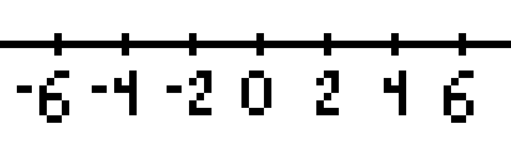 |
| 4. | Between consecutive tick marks, put a bar whose height is equal to the number of data points whose values are at least as big as the left tick mark and less than the right tick mark. | 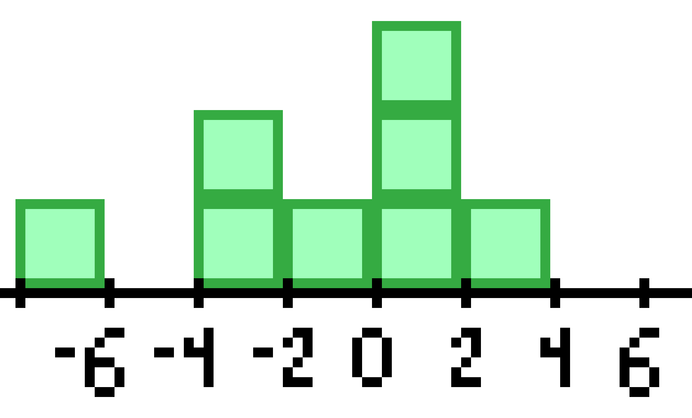 |
What better place for examples than generating your own in Desmos? Note that the "left" alignment option is already chosen to match with our "How To" section.
|
|
|---|---|
|
Incorrectly setting bin intervals: Using uneven bin widths or overlapping bins can distort the distribution of data. |
Use consistent, non-overlapping bin intervals: Decide on appropriate bin sizes based on the data range (e.g., bins of width 5 if data spans 0 to 50). Make sure each value falls into only one bin. |
|
Omitting labels for bins: Without clear labels, it can be hard to interpret the data in the histogram. |
Label the bins clearly: Label the x-axis with bin intervals so that a viewer knows how the data is grouped. |
|
Gaps between bars: Leaving gaps between bars (unless it’s a bar chart) can imply non-continuous data, which is misleading for a histogram. |
Keep bars touching each other: Ensure bars are adjacent to indicate a continuous data set unless there are explicit gaps in the data. |
See the "How To" section!
A histogram is a 2-dimensional visualization of univariate data. It displays the frequency with which data values show up within evenly sized intervals.
| 1. | Start with a univariate data set. | \(-7,-4,-3,-2,0,0.5,1,2\) |
| 2. | Choose a bin size. | \(2\) |
| 3. | Prepare an axis with step size equal to the bin size you chose. | |
| 4. | Between consecutive tick marks, put a stack of dots whose height is equal to the number of data points whose values are at least as big as the left tick mark and less than the right tick mark. | 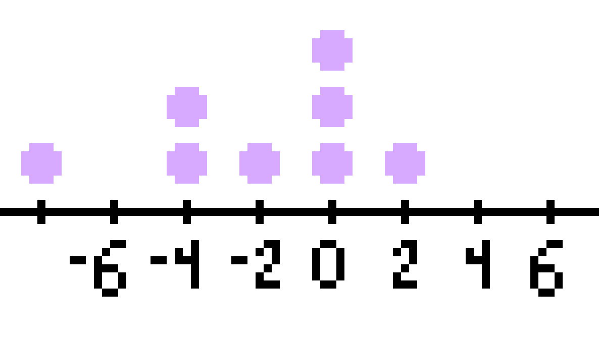 |
What better place for examples than generating your own in Desmos? Note that the "left" alignment option is already chosen to match with our "How To" section.
|
|
|---|---|
|
Incorrectly setting bin intervals: Using uneven bin widths or overlapping bins can distort the distribution of data. |
Use consistent, non-overlapping bin intervals: Decide on appropriate bin sizes based on the data range (e.g., bins of width 5 if data spans 0 to 50). Make sure each value falls into only one bin. |
|
Omitting labels for bins: Without clear labels, it can be hard to interpret the data in the histogram. |
Label the bins clearly: Label the x-axis with bin intervals so that a viewer knows how the data is grouped. |
See the "How To" section!
A dot plot is a 2-dimensional visualization of univariate data. It displays the frequency with which data values show up within evenly sized intervals.
This table uses images from this Desmos graph.
| 1. | Start with a univariate data set. | \(2,4,5,7,9,12,14,15,17,19,21\) |
| 2. | Determine the minimum, first quartile, median, third quartile, and maximum of the data. | These are \(2, 5, 12, 17, 21\). |
| 3. | Prepare an axis that at least ranges from the minimum to the maximum of the data. | 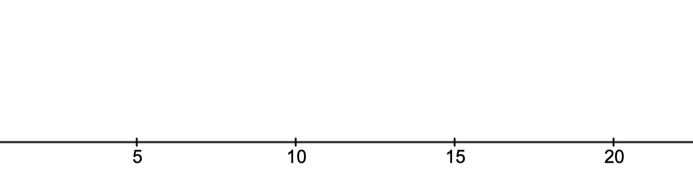 |
| 4. | Just above the axis, draw vertical lines at each of the values you found in step 2. | 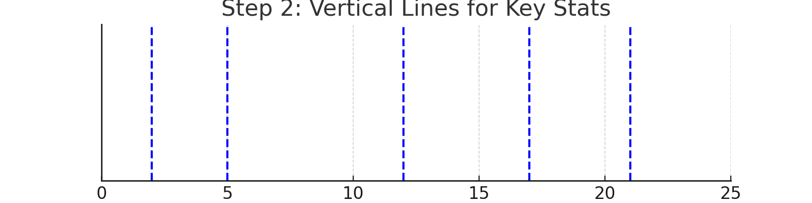 |
| 5. | Create the final "box and whisker" plot by adding horizontal lines as shown to make a box around the IQR and "whiskers" extending to the minimum and maximum. | 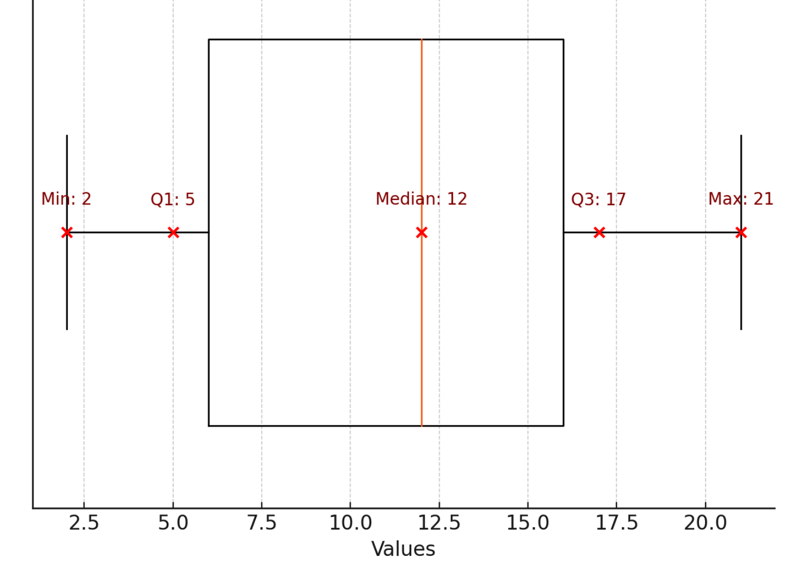 |
| 6. | Optional: Exclude outliers from your data by following the \(1.5 \ast \text{IQR}\) rule (see the corresponding tool for outliers in the "Measure the spread of data" drawer). Repeat the process above without the outliers, and just mark outliers with dots in line with the whiskers. |
This example uses different data.
Desmos link 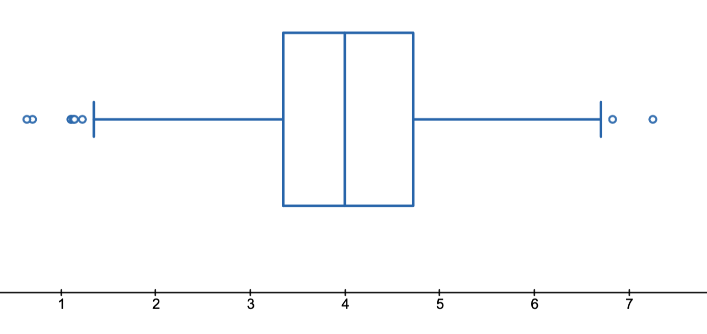 |
What better place for examples than generating your own in Desmos?
|
|
|---|---|
| Mistaking the Median for the Mean: Using the mean instead of the median as the middle line in the box. | Use the Median: The middle line of the box in a box plot should represent the median, not the mean. |
| Unequal Box Heights: Making the box height vary based on data frequency. | Keep Box Height Consistent: In a box plot, the box height should remain uniform and doesn’t indicate data frequency. |
See the "How To" section!
A box plot is a helpful way to visualize the range, interquartile range, median, and outliers of a univariate data set.
This table uses images from this Desmos graph.
| 1. | Start with a 2-column table of data. | 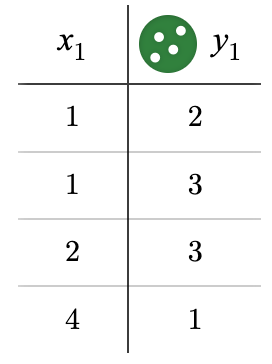 |
| 2. | Create axes on graph paper that can accomodate the entire range of values in the table. | 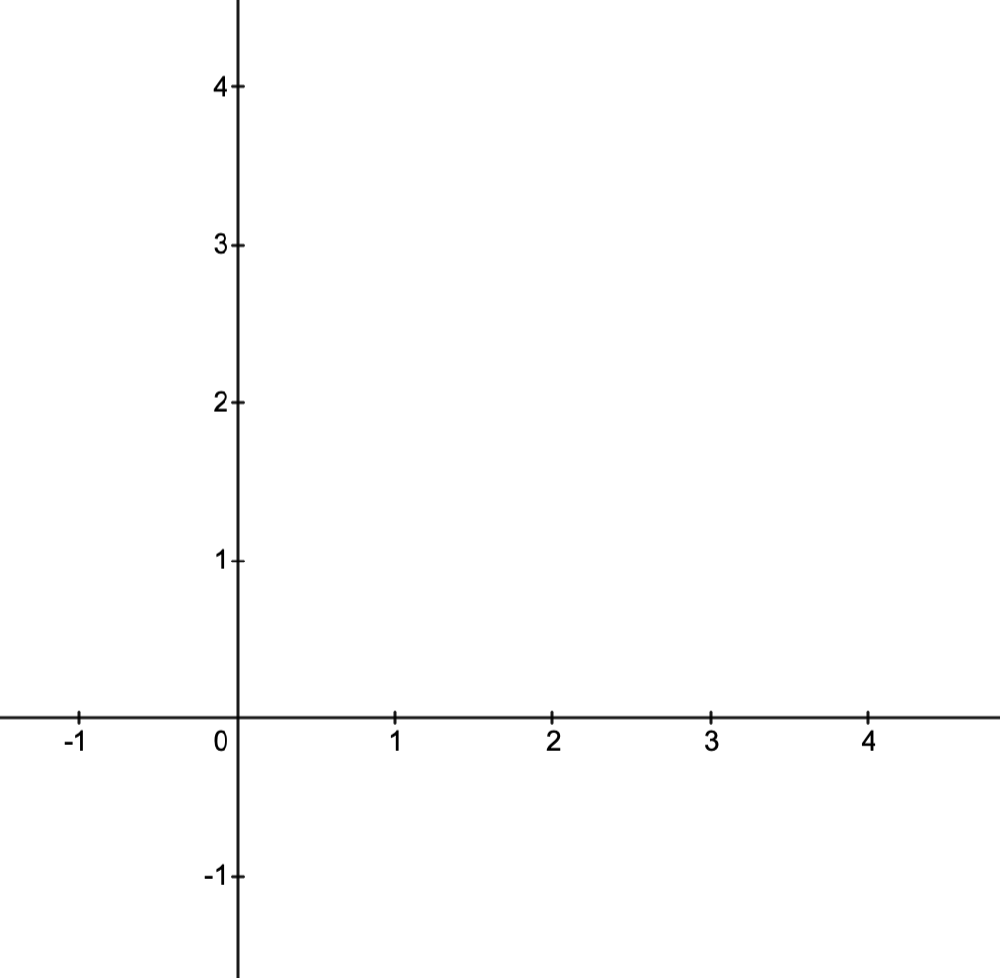 |
| 3. | For each row in the table, place a point on the graph with those \(x\)- and \(y\)-coordinates. | 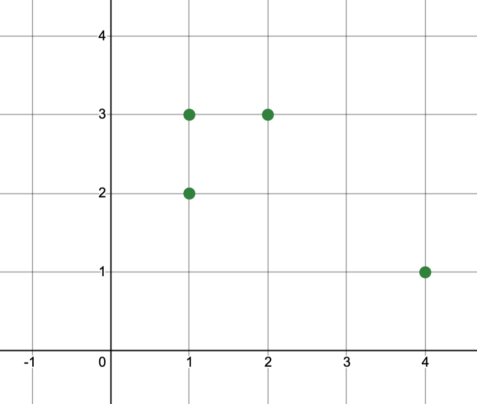 |
What better place for examples than generating your own in Desmos?
|
|
|---|---|
| Not Labeling Axes: Leaving the x-axis and y-axis without labels, making it unclear what each axis represents. | Add Clear Labels: Label each axis with the correct variable or units so the scatterplot data is interpretable. |
| Using Uneven Intervals: Marking intervals inconsistently along the x-axis or y-axis. | Use Consistent Intervals: Ensure all intervals are evenly spaced along both axes for accuracy in data representation. |
| Misplacing Data Points: Plotting points slightly off from where they should be, leading to inaccuracy. | Double-Check Coordinates: Carefully match each data point’s x and y values with the corresponding axis intervals before plotting. |
| Overlapping or Clumping Points: Placing too many points in a small area without differentiation. | Use Different Symbols or Colors: Differentiate overlapping points by using various symbols or colors if multiple data sets are plotted. |
| Not Including a Title: Leaving the scatterplot without a title, which makes it harder to interpret the overall purpose of the data. | Add a Descriptive Title: Give your scatterplot a concise title that explains what the data represents. |
See the "How To" section!
A scatterplot is a data display used to visual represent bivariate data.
| 1. | Start with data displays (such as histograms) for two data sets that have approximately the same mean. | 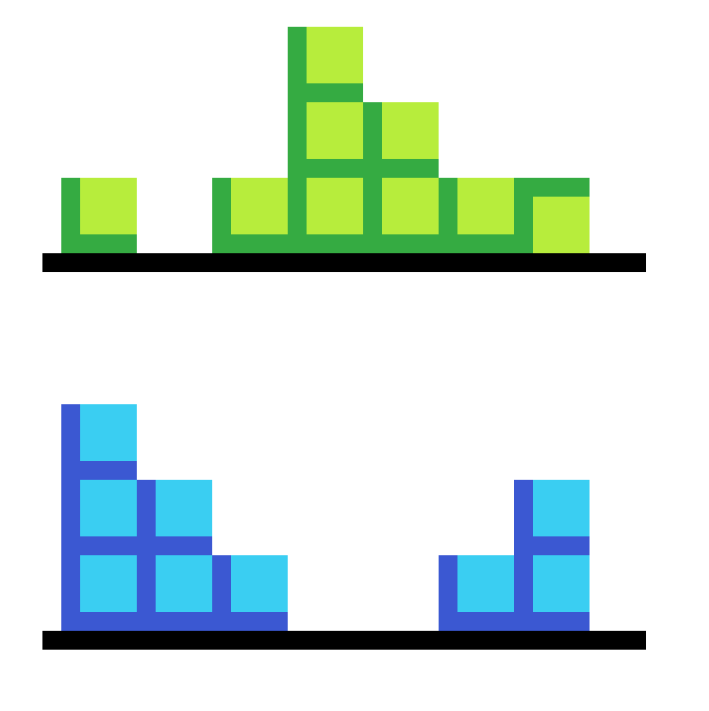 |
| 2. | Ask yourself, "How far away from the mean are these data points?" | 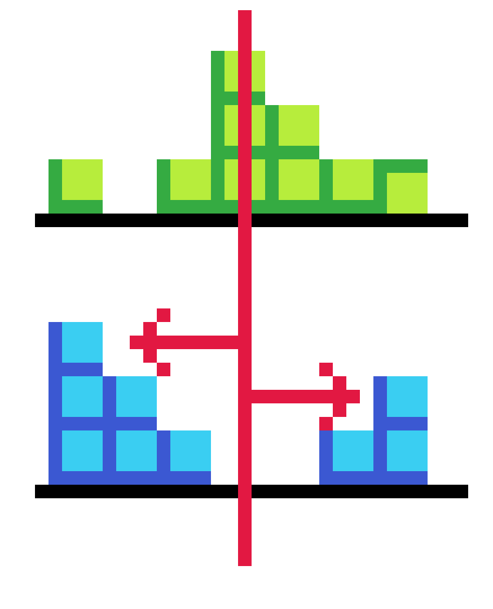 |
| 3. | For the group where the points are further from the mean, conclude that the standard deviation of that data is probably larger than the standard deviation of the other data. | 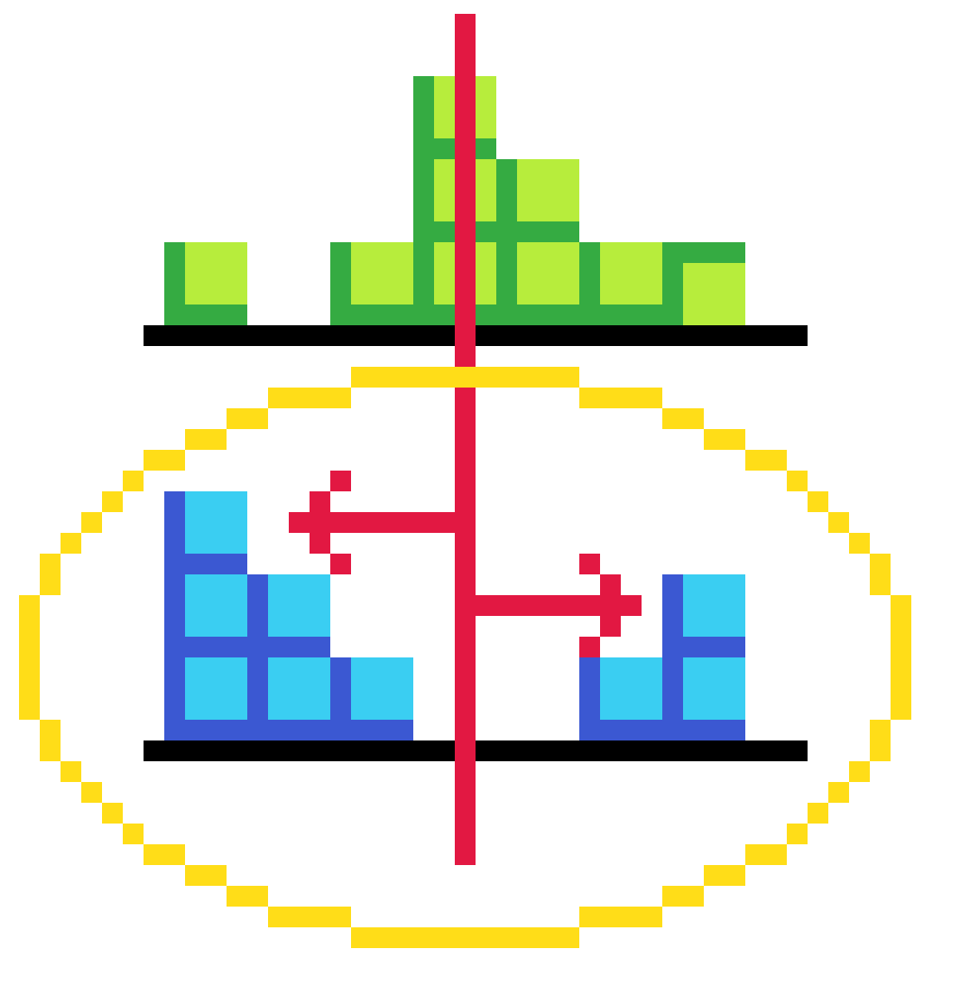 |
| 4. | Use technology to calculate the standard deviation precisely, just to be sure. |  |
This section uses data from this Desmos graph.
Each graph has mean equal to zero.
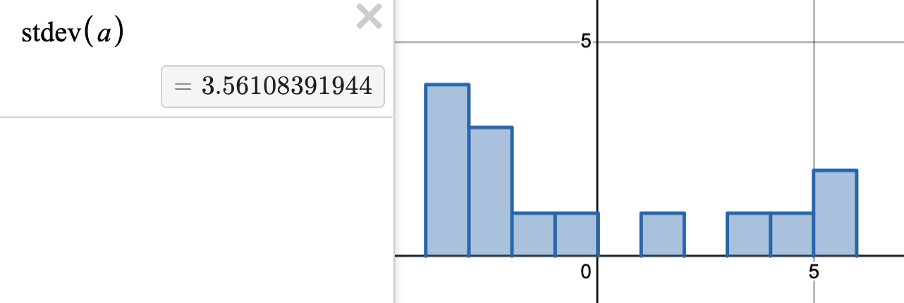
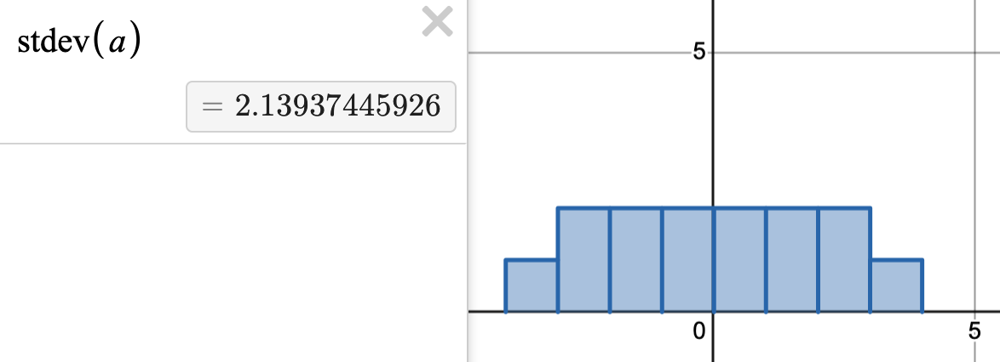
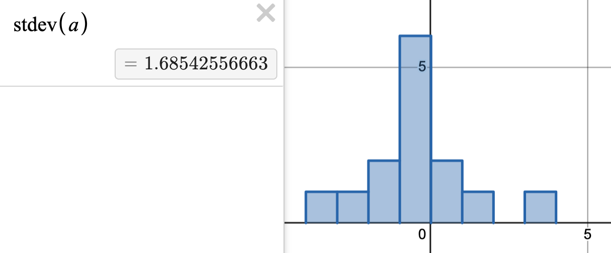
|
|
|---|---|
| Using standard deviation to compare data sets with quite different means. | Only use this to compare data sets with similar means. |
Check out the "How To" section!
The standard deviation of a data set measures how much the data points vary from the mean. There are two slightly different ways of computing it. In each case, let \(x_1,x_2,\ldots,x_n\) be the collection of \(n\) data points you are pondering.
- If you know the mean of the population you got your data from, then you can compute the population standard deviation as follows. Let \(\mu\) denote the mean of the population. Then the population standard deviation is given by the following formula. \[ \sigma_{\text{population}} = \sqrt{\frac{(x_1-\mu)^2 + \cdots + (x_n - \mu)^2 }{n}} \]
- Even if you don't know the mean of the population, you can still compute the sample standard deviation as follows. Let \(\bar{x}\) denote the mean of the data set \(x_1, \ldots, x_n\). Then the sample standard deviation is given by the following formula. \[ \sigma_{\text{sample}} = \sqrt{\frac{(x_1-\bar{x})^2 + \cdots + (x_n - \bar{x})^2 }{n-1}} \]
| 1. |
| 2. |
| 3. |
|
|
|---|